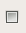

0.8.11
Copyright © 2009 Denemo Project
This Manual is released under the Creative Commons Attribution-Share Alike 3.0 Unported license.
Table of Contents
- Introduction
- Getting Started
- Overall View of Denemo
- The Denemo Window
- The Print Preview Pane
- The Main Menubar
- Toolbar
- Object Menu
- Rhythm Patterns
- Playing Notes into Denemo - MIDI
- Playing Notes into Denemo - Audio (Souncard Mic Input)
- Understanding Modes
- Basic Use
- Adding Key/Mouse Shortcuts
- More Commands
- Variables Defined in Scheme
- Functions Callable from Scheme
- Denemo Directives
- Directive Edit Scripts
- LilyPond Editing
- Using the Denemo Classic Mode
- Score Playback
- Publishing
- Advanced Features
- Denemo Command Line Options
Denemo lets you create musical scores. You can type music in using the keyboard or play it in using a MIDI contoller or the microphone input. You can edit your music - the display shows you the measures you are working on - and you can playback selected bits to check how it sounds. You can preview and print the score or parts to the highest standards used in the music publishing industry - thanks to the Lilypond typesetting program.
Denemo does not attempt to show the appearance of the finished score, it just shows you enough to enable you to enter the music efficiently. To see the finished score you press Print Preview.
Denemo is available from a variety of sources for different distributions. The latest stable release (tar.gz and .deb formats) is available for download from http://download.savannah.gnu.org/releases/denemo/. You can install Denemo from the Debian unstable repositories, using the command apt-get install denemo. Builds for Macintosh are available from the Gnu-Darwin project. The Denemo development branch can be downloaded using anonymous CVS or Git.
Anonymous Git checkout:
git clone git://git.savannah.gnu.org/denemo.git
Anonymous CVS checkout:
cvs -d:pserver:anonymous@pserver.git.sv.gnu.org:/denemo.git co -d denemo master
To build Denemo from a source package, the following dependent packages should be installed first. Remember to install the development packages as well (check your distribution for the specific package name):
![[Note]](images/note.png) | For Debian Users |
|---|---|
Type apt-cache showsrc denemo at a command line to determine what are the package names for Denemo dependencies. Type apt-get build-dep denemo to build the dependent files or use apt-get to install the packages individually by copying and pasting there names to the command line. | |
g++ 2.95 or higher
flex 2.5.4a or higher
bison 1.35 or higher
cdbs
gettext
libgtk2.0-dev
gtk+ 2
libglib2.0-dev
libxml2
libxml2-dev
LilyPond 2.4
autoconf 2.59 or higher
automake1.7
libaubio
libfftw3-dev
libportaudio
Denemo uses other applications for playback and printing. You may need to install the following applications, and edit the preferences menu to tell Denemo which you want it to use.
csound (optional, www.csounds.com)
A PDF viewer (ghostview, evince etc)
A midi player such as timidity
An image viewer such as EOG
Denemo is available in a variety of formats. The current stable release is available either as source code or in binary format. The Development branch of Denemo is available as a GIT source tree.
Procedure 1. To install from source code:
Open a terminal window.
Change directories to the directory to which you downloaded the Denemo source package.
Uncompress the source package using standard Linux tools (tar and gunzip).
Change directories to the uncompressed directory.
On starting a Denemo up to three music scores (called init.denemo) are loaded, and any actions associated with them are run. The first of these is provided with the system and does essential initialization, the second you can provide yourself in the file ~/.denemo/actions/init.denemo (where ~ means your home directory). Finally (and every time you ask for a new blank score) your default template (~/.denemo/templates/default.denemo) is loaded. In this file you can keep your favorite paper margins etc.
In addition, on startup a set of keyboard and mouse shortcuts, and a selection of optional menu items are loaded. If you have a Numeric Keypad you may wish to start with an alternative set (Edit->Customize Commands Shortcuts...->Manage Command Set and click on "Load a Standard Command Set" to get this. Save it for next time using "Save as Default Command Set").
| Note |
|---|---|
| You should exit and re-start Denemo after creating a new command set to be sure of getting your keybindings to work. | |
Here are a few of the keyboard shortcuts that are commonly used in Denemo.
- Letters A-G are used to refer to the notes A-G, either moving the cursor, inserting or editing depending on mode.
- Numbers 0-6 are used to refer to the note durations Whole Note ... 64th note, inserting, changing the prevailing duration or editing depending on mode. The corresponding Numeric Keypad keys are used if you choose that command set.
- "." dots a note, Ctrl-"." undots it.
Here are a few of the mouse shortcuts that are commonly used in Denemo.
- Shift Key and Left mouse button drags notes up and down.
- CapsLock with Left mouse drag inserts a slur
- CapsLock with Left mouse drag inserts a slur
- CapsLock AND Shift key with Left mouse drag inserts a crescendo
- CapsLock AND AltGr key with Left mouse drag inserts a diminuendo
Denemo is used via the computer keyboard, MIDI controller or playing in via a musical instrument. Quite a few mouse operations are also included by default. Clicking on the score will select items, and the status bar at the bottom will describe the item clicked. Right-clicking on items in the score allows you to edit any special attributes, (called Directives, see the section called “Denemo Directives”), that they may have. Clicking on the initial clef, key or timesignature lets you edit these, clicking to the right or left of the measures visible moves you forwards and backwards in the score. Selections can be made by dragging with the mouse from one note to another. And right-clicking any menu item gets help and the opportunity to set a shortcuts for the menu item. Furthermore, scripts are available in the menu system that give the mouse further uses.
The unit of work in Denemo is a musical score, which can be saved in a single file (with .denemo suffix). This is represented on the screen by a "tab". If you have several tabs open at once they appear just above the music in the main window, and you can switch between them by clicking on the tab.
One score may contain several movements, which you can move between, insert and delete with the Movements menu. A movement is a continuous piece of music with titles etc.
Within a movement there are staffs (arranged vertically) and within the staffs Denemo Objects. These can be notes, chords and Denemo Directives (see the section called “Denemo Directives”). The notes and chords are displayed in conventional format (though not fully typeset). The Denemo Directives are used for most things that are not chords or notes: Metronome marks, repeat barlines etc are good examples. They can also be attached to chords, individual notes in a chord, to a staff as a whole and to the score as a whole; in this case the directive can be thought of as an attribute of the object it is attached to. Each Denemo Directive carries its own display method. For example the Close Repeat barline appears as a Denemo Object in the converional music notation, while a Directive attached to a staff (e.g. Smaller Staff) may appear in a menu under a tools icon to the right of the staff. In the case of "Smaller Staff" the directive directs the LilyPond typesetter to make the staff smaller, and it can be edited from the menu under the tools icon to the left of the clef. Another tools icon appears if directives are attached to voices within a staff, again to the left of the clef, below the staff one.
The command Edit Object gives access to editing Denemo Directives, which generally have their own edit methods. You can use the Print View to indicate the padding that you wish to apply to some item, or to show where you want to drag it to.
The titles of the current movement can be set. These titles should be left blank for movements after the first if they apply to the whole score (a LilyPond peculiarity). In the movement properties dialog you can set a LilyPond directive to cause a page break before the movement (see LilyPond docs, but briefly #f is no page break and #t (true) is page break). You can include any other directives here to apply to the movement as a whole.
Each Denemo file represents a piece of music which may consist of several “movements”, interspersed with headings. These might be different songs in a song book, or literally the movements in a classical sonata, or any other pieces of music that you want to print out in a book form with titles, page numbering and so on.
| Note |
|---|---|
When a file is loaded it opens with the final movement set as the current movement. | |

The main window has menus and toolbars at the top. With View->Score View checked there is next the drawing area where the music input is displayed - just the few measures you are working on. With View->Print View checked there is another pane showing the print preview of your score. At the bottom is a status line showing which movement you are in and what sort of object the cursor is on. If there are any MIDI filters that active they will be noted at the right in the status bar. The small colored rectangle is the Denemo Cursor, which shows where notes etc will be added/edited next. Selected music is colored blue and outlined with a blue rectangle.
The menus in Denemo are unusual: they not only let you do some particular action, but also each menu item lets you enquire what the action does in more detail and lets you set keyboard/mouse shortcuts for the actions. All this extra functionality & more comes with right-clicking the menu item, while the usual left click is for executing the action itself. The menus can always be torn off for working with particular items (e.g. working with different movements or with measures, dynamics etc.). Also available by right-clicking is creating new actions - often by modifying ones that are already there.
The print preview pane is shown by checking View->Print View. Right clicking in this pane allows you to refresh the print preview (the program hangs waiting for LilyPond to finish).
Right clicking in this pane also allows you to choose offsets to apply to items that LilyPond has positioned badly.Or you can select an amount of padding to apply to some object. This is generally a better way of indicating that it is too close to something else, since other objects will move away from it as needed - that is, if you later edit something it will behave more intelligently. The actual editing is always done in the Score View pane, choosing Edit Object while the cursor is on the offending object and then dragging in the Print Preview window to indicate the amount of change required.
The Main Menubar has submenus for overall control of the program. It contains the following submenus:
File
Edit
View
Mode
Playback
More
Help
Use the menu to perform global operations related to storing and retrieving from file systems. The File menu contains the following Menu Items:
| Menu Item | Description |
|---|---|
| New | Create score from scratch. |
| Open | Open an existing Denemo file. |
| Add Staffs | Open an existing Denemo file and append the staffs from the (first) movement of it to the staffs in the current movement. |
| Add Movements | Open an existing Denemo file and append the movements from it to the current score. |
| Open Recent | Open a file recently edited. |
| Open Standard Template | Create score from a stock template. |
| Open from Gallery | Create score from an example in the Gallery. |
| Open Custom Template | Create score from a template you have saved. |
| New Window | Open another instance of Denemo. |
| Open in New | Open an existing Denemo file in a new tab (or "page") so that both can be used at once. |
| Save | Save the current file. |
| Save As | Save the current file with a new name. |
| Save Parts | Saves a set of parts (staves) in LilyPond format. |
| Export PDF | Run LilyPond on the current file to create a PDF. |
| Displays the score in a pdf view, from which it can be printed. | |
| Print excerpt | Displays only the selection in image viewer, from which it can be saved. |
| Print Current Part | Displays one part taken from the score in a pdf view, from which it can be printed. |
| Score Wizard | Open a Score Setup Wizard. |
| Close | Close the current score but keep other Denemo scores open. |
| Quit | Close the current scores and exit Denemo. |
Use the menu to access common editing commands.
| Menu Item | Description |
|---|---|
| Undo | Undo the pitch and rhythm just added. |
| Redo | Redo the pitch and rhythm just added. |
| Select | Menu items for selecting music in the score. |
| Cut | Copy the selected notation to the clipboard and delete the selection. |
| Copy | Copy the selected notation to the clipboard. |
| Paste | Paste the copied notation at the cursor point. |
| Paste LilyPond Notes | Paste text as LilyPond notes. Open a .ly file in a text editor, copy some notes and then execute this command to capture them into Denemo. |
| Edit Object | A general interface to editing whatever is at the cursor, especially Directives attached to notes/chords. |
| Change Preferences | Set external programs (LilyPond, PDF viewer etc.), autosave interval etc. These values will bre remembered when you re-start the program |
| Customize Commands, Shortcuts... | |
| Quick settings checkbox | One touch setting of keyboad shortcuts |
| Save Command Set. | Save your current customization of the menu commands and shortcuts. |
| Manage Command Set. | Hide/Delete/Show menu items, set keyboard shortcuts, set cursor shapes, load/save all these. |
Use the menu to toggle toolbars and palettes used with the mouse.
| Menu Item | Description |
|---|---|
| Score View | Shows the score in panorama format for editing. The printed score will generally look different. |
| Print View | Shows the score as engraved by the LilyPond typesetter. You cannot edit in this window, but you can drag items to indicate how you want an item edited. |
| Lyrics View | Shows any lyrics for the current staff/voice. Each verse has its own tab, when selected the lyric placement shows in the Denemo display, so you can adjust by typing in the lyrics view window |
| Rhythms Patterns | Allows custom rhythm patterns. Enter rhythms by setting up patterns and then overlay the rhythms with pitches via MIDI or microphone |
| Note and Rest Entry | Notes and rests buttons – the highlighted button is current duration – click a button to enter a note/rest, or to edit the note under the cursor in edit mode |
| Articulation Palette | A (limited) palette of expression marks etc to apply to notes. More are in the menu system under Markings. |
| Score Titles, Controls etc | If this is checked any Titles, indent settings etc applying to the score can be shown as buttons at the top of the score. They must be created with their graphic field set for this. |
| Menu of Objects | Menu of all the Denemo commands listed under type of object |
| Show LilyPond | Pops up a window for customizing the LilyPond |
| Show Scheme Script | Pops up a window for showing scripts written in scheme to control Denemo |
Use the menu to switch modes or choose to use modelessly. The different modes are useful for different ways or phases of work.
With the standard keyboard shortcuts the modes work like this:
No Mode. No standard keypresses are defined – you will need to assign keys yourself. You will need to define separate keypresses to insert the notes, change the notes, move the cursor to a note, change the prevailing duration, etc. This mode is for those who want to set up the keys to have single functions. The cursor is green in this mode. This mode gives easy access via the menus for the actions that do not change with modes.
Insert Mode. In this mode the keys 0,1,2... select the prevailing duration (whole-note, half-note ...) while the Note name keys A,B,C ... insert a note of that name in the prevailing duration. The octave is the one nearest the cursor. The cursor is green in this mode. This mode is good for entering single line music.
Edit Mode. In this mode the keys 0,1,2... insert a note (whole-note, half-note ...) at the current cursor position, while the Note name keys A,B,C ... change the note at the cursor to A,B,C.... The cursor is purple. This mode is good for editing music already entered and for entering pure rhythms (all notes on the same pitch, for overlaying pitches via microphone input later). You can also enter music in this mode - you type the duration key (which inserts a note) and then the Note name key, which edits it to the one you want.
Classic Mode. In this mode the keys 0,1,2... insert a note (whole-note, half-note ...) at the cursor position, while the Note name keys A,B,C ... move the cursor. The cursor is green. This mode is good for entering music with chords (Enter is the standard keybinding for this).
Entry types: Note, Rest, Non-Printing Rests, Audible Feedback. These are used with the above modes to control what is entered. The unusual one here is Audible Feedback, which gives audio feedback when entering note durations, enabling you to enter rhythms without looking at the screen to check that you have entered the correct duration. Non-Printing rests allows you to make a part vanish and return when writing several parts to a staff.
| Menu Item | Description |
|---|---|
| No Mode | Switch Note/Rest menu to actions that are the same regardless of mode. |
| Insert | Switch to insert mode. |
| Edit | Switch to Edit mode. |
| Classic | Switch to the original denemo mode. |
| Note | Switch to entering notes. |
| Non Printing Rests | Switch to entering rests which just occupy space and time but will not appear in the score. |
| Rest | Switch to entering rests. |
| Audible Feedback | Switch to Audible Feedback for entry via keyboard. Each duration has its own audio feedback. During pitch entry via Audio or MIDI the cursor advances automatically |
| Toggle Edit | Toggle between current mode and Edit mode. |
| Toggle Rest | Toggle between entering notes and entering rests. |
| Toggle Audible Feedback | Toggle Audible Feedback off/on. |
Choose whether to use external sources (Audio from the Mic input or MIDI) for Denemo. To use these you may need to review the settings in Edit->Prefs first.
Add commands to Denemo. Extra commands are available (those which not everyone will want) via this menu. More Commands gives commands shipped with Denemo, while My Commands gives ones that you have created locally. Note that the extra commands can also be loaded at the menu where you are looking for them (you right-click on a menu item, and if there are more commands for that menu the More Commands for this Menu item will show),
Update Commands from the Internet allows you to get the latest versions of commands directly from ftp://denemo.org. They are stored in the .denemo/download directory in your home directory. You can set a preference to have this happen in the background every time you start Denemo, if you prefer.
Use the Playback menu to start playback of your score. Denemo lets you hear your score, using an external MIDI player, or Csound.
| Menu Item | Description |
|---|---|
| Play | Plays the selected measures or starting from the current measure |
| Stop | Stops the playback |
| Play Using Csound | Play this score (Csound) using .orc file specified in . |
| Playback Properties | Set playback tempo, select an .orc file for Csound playback |
Use the Toolbar to access common Denemo commands quickly. The Tool Bar contains the following icons:
| Icon | Description |
|---|---|
 | Creates a new document. |
 | Creates a new document using the score wizard. |
 | Opens the Open File dialog box. |
 | Saves the current file |
 | Runs LilyPond to convert the current file to PDF and sends it to the printer for printing |
 | Undoes the last action. (Currently Undo only works for adding notes) |
 | Redoes the previous undo action. (Currently Redo only works for adding notes). |
 | Cuts the current selection to the clipboard. |
 | Copies the selected notation to the clipboard. |
 | Pastes the current clipboard item at the cursor position. |
 | Jumps to the first measure of the movement. |
 | Jumps to the last measure of the movement. |
| Plays the current piece using MIDI | |
 | Stops the MIDI playback |
The object menus give you actions (such as insert, delete ...) ordered by the objects (notes, staffs, measures ...) that they act on.
| Menu Item | Description |
|---|---|
| Score | Settings that apply to the whole score. |
| Movements | Insert/remove navigate, change the properties of movements. |
| Staffs/Voices | Insert/remove, navigate, swap, change the properties of staffs or voices |
| Measures | Insert/remove navigate measures . |
| Notes/Rests | The first menu item in this menu depends on which mode you have chosen. For example in Classic mode there is a function to move the cursor to a new note while in Insert mode the function inserts a note of the given name. These menu items are present mainly to allow you to set shortcuts – it would be too slow to use them for actually entering notes/rests. I addition there are menu items for inserting rests, deleting, tied notes, setting the notehead style and stem direction, grace notes, triplets, transposing and more |
| Chords | Insert/remove notes from a chord. |
| Clefs | Insert change or set the initial clef. |
| Keys | Insert a change or set the initial key. |
| Time Signatures | Insert a change or set the initial time signature. |
| Markings | Insert/remove tempo indications, dynamics, slurs, trills etc. |
| Cursor | Navigation of the (Denemo) cursor. |
| Bookmarks | Create/delete or move to bookmarked positions in the current movement. |
| Lyrics | Create and delete lyrics. |
| Other | Enter chord symbols, figured basses or LilyPond directives. Clear overlays. |
In the score properties dialog things that affect the whole piece can be set, as well as the titles of the current movement. In the score properties dialog you can include directives to apply to all the movements.
| Note |
|---|---|
When a file is loaded it opens with the final movement set as the current movement. | |
Dynamics, Slurs, Trills, Tempo Indications, and much more a found in the Markings menu
You can collect together your favorite ones, either by assigning shortcuts, or creating a menu of favorite commands which just invoke the action you use.

The Rhythm Pattern toolbar lets you enter music following a rhythmic pattern. If you have a pattern in your music that appears many times you only need to type it once. By selecting it and clicking Create Pattern you install that pattern on the toolbar. Then as you enter notes (in Insert Mode) the notes follow the rhythmic pattern chosen. Pressing a duration key goes back to adding notes of the prevailing duration. You can have several custom patterns like this and switch between them using the space bar (or other keybinding of your choice). Another (more musical) way of entering rhythms is to "drum" them in using the keys on the computer keyboard for quarter-note, eighth-note etc, a curious sort of "musical instrument" where you change key for different durations. Use the numeric keypad for this. Drumming in is quickly learnt and, by playing in the notes rhythmically you can keep your place in the music. Use the Mode->Audible Feedback option for this, so that you get a bell to confirm when you have completed a measure.
Using Input->Midi or Audio allows you to enter pitches directly. If you have entered your piece of music as pure rhythm you can overlay with the pitches using a MIDI controller or musical instrument with mic, headphones out or pickup attached to your soundcard.
Denemo can take pitches directly from MID input. Select Input->Midi Input. The control window allows you to choose the enharmonic range. Under Mode->MIDI are various "MIDI filters" that allow you to control how the MIDI input is used: with none active the behaviour is as if you had entered the notes using the pc-keyboard (except that octave, accidental and note name are all entered in one go). You can also use Advance on Edit to put the pitches onto pre-entered rhythms, or Check Pitches (where you play through the piece and a warning is issued if you hit a wrong note).
These MIDI filters are scheme scripts, so they can be tailored to do whatever you wish. One example is a filter that enables you to enter Figured Bass figures by playing the notes corresponding to the figures while holding down the bass note. Chords could be entered using similar code.
Denemo can listen for, and detect the pitch of notes on the mic input of the computer; it doesn't attempt to guess the rhythm - such systems do not work well - but you will find that playing the notes in time will help you to play them in, as well as make playing them in a musical experience rather than a chore.
Playing the notes in can be much quicker than using the keyboard since the note octave and accidental are all given just by playing the note. If you are able to play a musical instrument then this will probably be much faster for you than typing note names, octave shifts and accidentals at the computer keyboard. Using the headphones out of an electronic keyboard avoids "noises-off" interfering with the pitch detection. Many microphones and pickups benefit from some pre-amplification - it is worth getting the level right before you begin.
When you select the Input->Audio on the Main Menu the Pitch Recognition window pops up. While the mouse pointer is inside the score drawing area the score is sensitive to pitches heard via the microphone input. The background colour of the score changes to show that the notes will be entered into the score.
There are two ways of using the pitch entry - Overlay mode (default) and Insert mode. The button marked Insert causes notes to be entered into the current measure in the prevailing rhythm - the mode is set to Insert for this. The button marked Overlays overlays the notes already present with the pitches you sound. There is a third button, marked Tuning, which is a state-of-the art musical instrument tuner.
Music is entered into the measure which holds the cursor. If you are overlaying a rhythm already entered, then the first un-overlayed note in the measure is overlayed by the note detected. You can delete the overlay using the regular delete keys, or clear them altogether if you want to start over in a measure. If you are in Insert mode then the notes detected will be inserted at the cursor position.
Use the enharmonic shift to select whether Bb or A# should be entered when you enter the given pitch - you can usefully go as far as B# and Fb.
Use the transpose control to shift up or down by octaves.
Most of the other settings would require study of the Aubio documentation to understand, but the one marked threshold may be useful to make the detection less sensitive to ambient noises if using a microphone with an acoustic instrument.
The best set-up is to plug the headphones-out socket of an electronic keyboard into the mic input, and choose a piano setting on the electronic keyboard.
If you don't have any musical instrument that you can plug directly into the mic in, then you can use an acoustic instrument with a microphone, in which case move your microphone closer or further from your instrument to get reliable detection. Too close and you get double detections, too far and you get missed ones. To check for good detection open a piece of music, set Overlay mode and put the cursor in the first measure and play the piece in – the notes should all turn blue if you have perfect detection. It is worth while getting perfect detection – more than one or two miss-detects per piece of music and you may want to use the Insert rather than the Overlay method.
Modes in Denemo are optional. Denemo has a large number of actions (functions) that it can execute for you, and these are to be found in the View-\>Objects Menu (grouped by objects such as note, measure, clef etc. Some of these functions do different things in different modes. For example the key A is usually bound to a function that moves the cursor to the nearest note A, or inserts a note A, or changes the current note to an A, all depending on which mode is chosen. (There are also entry modes, in rest entry mode instead of a note a rest would be inserted).
If you dislike modal programs, you will set your shortcuts to the non-modal functions (these are found in the View-\>Objects Menu when Mode-\>No Mode is selected, or in the View-\>Actions Menu.)
When using a MIDI controller to enter pitches, you can just check Audible Feedback, and never have to switch modes, as the cursor automatically moves on for you with this setting. You select rhythms via the keyboard and edit their pitch with the MIDI in.
In addition to the basic Insert and Edit modes there are four entry modes for specialized use. Rest entry is useful for entering a large number of rests. (For single rests it is easier to use a keypress - e.g. Alt-3 for an eighth note). Non-printing rests are used for parts which enter during the course of a measure. Note entry is the default, and if you check the Audible Feedback checkbox the different durations have varied audio feedback and a beep is sounded when Denemo moves to the next measure – this is to help when entering the rhythm of a piece for later overlaying with pitches.
Introduction
Denemo allows you to explore all the actions (insert/delete/edit/navigate...) using the Objects menu. So inserting notes can be found under Notes/Rests while inserting a Staff comes under Staffs/Voices.
| Note |
|---|---|
| When you have found the action you need you can right click on the menu item to get an explanation of the action and to view/set a key press- a keyboard shortcut - to activate the action. If you are setting a lot of keyboard shortcuts for menu items you can check the Edit->Keyboard Setup->Allow Quick Shortcut Edits button, whereupon you can set the keyboard shortcut just by pressing the desired key while the menu item is selected. In addition you can customize the mouse actions to initiate commands, and set the cursor that will show while certain mouse conditions apply. | |
Denemo offers several ways of entering music: typing at the keyboard, playing in via a MIDI keyboard (controller), playing in acoustically using a microphone or choosing items from the menu system.
Using the menus for everything would be very slow, but next to each menu item is the keypress that you can use instead. If there is no keypress shown, and you want to use that item often, then right click on the menu item and you can set a key combination for that menu action. Right clicking is also useful for getting a description of what the menu action is.
Typing at the keyboard can be very fast, if you forget which keypress you need you can consult the menu system to find out. This method is good for touch typists.
For entering a lot of already written-out music, playing the music in via a MIDI keyboard or microphone can offer the fastest and most musical method.
One way to do this is to check the Audible Feedback checkbox and enter the music as pure rhythm, ignoring the note names. Each duration sounds its own pitch and length as you enter the durations. As you start each measure the bell will sound so that you can keep your eyes on the score you are copying without needing to look up and check that you haven't miss-typed. If you are a reading musician you will find that you tap in the rhythm rhythmically which helps to keep your place in the piece you are entering.
Once you have entered the rhythms you choose an external source from the Input menu, placing the cursor in the first measure, play the notes via MIDI or a microphone plugged into the mic input of your soundcard. The Audio Input button introduces a special entry mode where the pitches you play in will overlay the rhythm, appearing as blue notes. You can delete any wrong pitches using the usual delete keys, without deleting the rhythm. In fact if you have an "interloper" (an extra spurious note) you can delete it and the other pitches will all move along to their correct places.
Another method of playing music in acoustically doesn't involve entering the rhythm separately. For this select Input->Audio and then choose Insert instead of Overlays on the Pitch Recognition Panel that pops up. With Insert the sounded notes are entered as in the prevailing rhythm. The same applies if you have MIDI, only you just need to select Insert mode to enter the notes in that case. So by choosing a rhythm (e.g. half-note, quarter-note, or a custom rhythm pattern) and playing in the pitches you can enter the music into a blank score.
For MIDI input there are special modes (MIDI filters), such as Advance On Edit, which means you can simply play the pitches in and they are applied to the notes. If you are entering notes and durations at the same time using MIDI then the "AngryDelete" finger can be useful. With this filter on notes are entered normally until, but if you make a mistake and press the wrong note just hit the next one much louder and it will make the correction for you! MIDI filters are found under Mode->MIDI
The oldest Denemo keymaps are no longer supported. (see the section called “Adding Key/Mouse Shortcuts”). (Input via MIDI keyboard and Mic in is now available). Denemo also provides shortcuts for use with Numeric Keypad.
Denemo provides different ways to set up scores:
Create template with the special name "default.denemo". If this is placed at the top level of your templates directory (that is ~/.denemo/templates/default.denemo), then it will be opened each time you start a new score.
Create an init.denemo score with everything you want to start up with, and any actions you want to be taken before you begin. This will be opened when you first start Denemo (that is once per Denemo session). See the section called “Musical Score that Do Things!” for details on what actions you can have Denemo perform before you start.
Use a Template
Use shortcut keys to add staves and set attributes
Use the Setup Wizard
Use Menus
Denemo comes with a few preinstalled templates. You can also design your own templates as well.
Navigate to , , The Open dialog box appears.
Double click on a template name from the list of templates. The dialog box closes and the template appears.
| Note |
|---|---|
Adjust the clef, key and time signatures as needed. | |
Inserting attributes with shortcut keys is an effective way to quickly customize a template.
Navigate to the Staff you want to change an attribute using one of these shortcuts:
Select Staffs/Voices-\>StaffDown to move down one staff
Select Staffs/Voices-\>StaffUp to move up one staff
Denemo Comes with a wide range of prebuilt templates for standard vocal and instrumental scores. If you have a custom score setup you use over and over create a score layout using the Setup Wizard and save it as a template.
Click on File-\>New From Template, The
OpenDialog box appears displaying the currently available Templates.Double click on the template name in the righthand pane. The template loads in the Main Denemo Window.
Note The currently active staff will be black. All other staves will be yellow, until they are active.
Denemo allows you to choose which keys activate which commands. It also allows you to choose Mouse press/release gestures (in combination with keys such as Shift, NumLock, CapsLock etc).
To choose a shortcut for a menu item, right-click on the item and choose the Create Mouse Shortcut, or the Edit Shortcuts option. The Set Mouse Shortcut Dialog requires you to set which button and action you want to use and then to hold/lock the keyboard modifier while clicking on the big button. The setting you have chosen is shown, and you click ok to accept it.
To set a keyboard shortcut, and to delete any sort of shortcut, use the Edit Shortcuts menu item. This dialog also allows you to choose a cursor to show while certain mouse actions are underway.
If your choice of keyboard shortcut already belongs to another command, you are warned about this, and given the chance to change your mind or steal the shortcut. Also, you can choose whether to distinguish between keypresses with, say the NumLock down and those without or to ignore it. If the NumLock is set but no command for that key specifically requires it then the setting of NumLock is ignored and the keypress is treated as if the NumLock was off.
The menu item that activates the command shows the shortcuts that exist in bright blue lettering. PrsL-CapsLoc, for example, is the Press action on the Left mouse key while the CapsLock light is on. In the default command set this is linked to the BeginSlur command, so that together with the RlsL-CapsLoc for the release of the left mouse button, you can "draw" slurs by using the mouse. Similarly, Shift with left mouse button (MveL-Shift) is set to allow you to drag notes up and down the staff. (This is using Command MoveNoteToCursor, which is found under Notes/Rests/Edit/Edit Note/To Cursor)
It is possible to add more commands to the set that Denemo ships with. Some of these are shipped with Denemo, but not added automatically so as to keep the menu sizes manageable. Generally, you right-click to find more menu items to add; once added you can set a keyboard/mouse shortcut and keep the command in your default setup.
You can also get Denemo to remember a frequently used sequence of actions - it can be installed in the menu system and given a keyboard shortcut just like any other command.
To do this you right-click and choose Show Scheme Script. (You do not have to understand what a Scheme Script is to use this!). In the little window that pops up set Record Scheme Script and then do the set of steps you wish Denemo to remember, using the menu items, not keyboard, for each step.
As a simple example, suppose you wanted a command to delete the next note (there are commands to delete the previous note and the current note, so why not?). You would enter some notes, put on Record Scheme Script and then from the menu Cursor select Cursor Right (to move on to the note to be deleted), and with the Notes/Rests->Delete->Delete Object menu item you would delete the note. (Each time you use a menu item you will see a new command entered into the Scheme window). Now turn off Record Scheme Script and you can experiment with your new command by pressing Execute in the Scheme Script window. To save this new command for future use, you right click on a menu item (in the menu where you would like the command to appear) and choose "Save Script as New Menu Item", this will ask you to make up a name for your new command as well as a label for the menu item etc.
You can save the command in your default sequence of commands (via Edit->Customize Commands...->Manage Command Set->Save as Default Command Set). If not you will be asked if you want to save your new commands when you exit. Otherwise you can re-load via the More->My Commands menu item.
There is an even easier way of adding your own favorite LilyPond tweaks, which is by modifying a tweak that has already been done. This can be done by using the text-edit dialog on an existing Denemo Directive (usually found under the Advanced button provided by an edit script). Here you can see the actual LilyPond text that will be inserted, and there is a button to create a script to generate whatever you choose to enter. You can also enter the name of graphic images (.png files) that are to be used to represent your item in the display, and say where it should be positioned.
Once you have created the script, it can be saved in the menu system by right clicking on an item in the menu where you want to place the command, and choosing "Save Script as New Menu Item" as above.
If you are a programmer you will have guessed that you can edit the Scheme Script window to create any command you want. Even if you are not familiar with Scheme you may find that you can adapt other scripts to do what you want.
A good example of this is a script to insert a particular LilyPond directive into the score. This is all that many scripts do: it is easy to see the piece of LilyPond in the Scheme Script window, and by changing it you can create a new command.
For example, from the More menu select the command /menus/ObjectMenu/Instruments/Orchestral/RehearsalMark (the files are laid out in folders/directories in the same way as the menu system itself). Then choose Get Script from the right click menu. With this command its script is appended to the Scheme Script window. Here you can see the part that says
- (d-DirectivePut-standalone-postfix "RehearsalMark" " \\mark \\default" )
which is inserting the LilyPond directive "\mark \default" which inserts the default rehearsal mark. (The extra \s are needed to tell Scheme that you literally mean a \ sign). You can change this to insert any other LilyPond that you need - always doubling the \ signs. The you can save as a new menu item, or use Save Script to customize the script you started with.
More ambitious programmers will need to know all the commands available. Besides the complete Denemo command set (the list is given in the Command Management window) there are the following additional Scheme procedures defined.
- d-InitializeScript deprecated - init.scm is now run automatically. (parameter: action-name) runs a script init.scm in the menupath attached to the action whose name is given. Used by commands that need a time-consuming initialization step which can be skipped on subsequent calls.
- d-GetType returns a scheme string indicating the type of the current object
- d-GetNoteName returns a scheme string, giving the note name a-g of the current note
- d-GetNote returns a scheme string, the note name, accidental and octave of the current note (LilyPond notation)
- d-GetNotes returns a scheme string, the notes of a chord separated by NULL characters
- d-PutNoteName takes a string argument, a note in LilyPond notation. Changes the note at the cursor. Not for use with multi-note chords.
- d-DiatonicShift Deprecated.
- d-NextObject moves cursor to next object, returning TRUE if current object has changed
- d-NextChord as d-NextObject, but skipping non-chord objects. chords includes rests and chords with 1 or more notes.
- d-NextNote as d-NextChord but skipping rests (i.e. chords with 0 notes).
- d-NextStandaloneDirective as NextObject, stopping on a standalone directive. Using d-DirectiveGet-standalone tag a directive of a particular tag can be found.
- (d-Directive-type? optional-tag) where type is one of score, scoreheader, movementcontrol, header, paper, layout, clef, timesig, keysig, staff, voice, standalone, chord or note.This returns #t if the cursor is on a directive of type (with tag optional-tag if optional-tag is present) else #f
- (d-DirectivePut-standalone? tag) inserts a standalone directive with the given tag at the current cursor position and places the cursor on it.
- (d-DirectiveGetTag-type) where type is one of score, scoreheader, movementcontrol, header, paper, layout, clef, timesig, keysig, staff, voice, standalone, chord or note. This returns the tag if the cursor is on a directive of type else #f
- (d-DirectiveGetTagForTag-type tag) returns the tag passed in if the cursor is on directive of type with that tag, else it returns the tag of the first directive of type that is present at the cursor, else #f
- d-WarningDialog Pass a string argument to pop up a warning.
- d-GetOption (parameter string of options). Takes a null separated set of options and pops up a dialog offering them to the user. Returns the one chosen or #f if the user cancels.
- d-GetChar returns a string containing a single character from the user (blocks waiting for a keypress)
- d-GetKeypress returns a string representing a keypress from the user (blocks waiting for a keypress) (e.g. Up for the up arrow key etc.)
- d-GetCommand returns a string containing the command name for the user's keypress (blocks waiting for a keypress)
- d-GetUserInput takes three strings, displays and returns the user's response as a string.
- d-GetMidi
- d-PutMidi
- d-PlayMidiKey
- d-BassFigure
- d-GetNoteAsMidi
- d-RefreshDisplay
- d-InputFilterNames sets the status bar
- d-Chordize Ensure that even a single note is treated as a chord - needed for some LilyPond constructs (e.g. fingerings)
Standard Denemo commands that pop up dialogs will work as usual if no argument is passed to them from Scheme. In general if a string consisting of strings of the form "name=value\0" is passed these will be used and no popup will occur. The field "name" will be given the value "value". The \0 is a NULL character that separates the assignment strings. As a shorthand if there is only one value being passed you can just pass the value. The names of the fields depend on the action being called. So for example
will open the file "myfile.denemo".
This feature is being rolled out, and currently works for
- d-InsertLilyDirective (directive, display. minpixels) (deprecated function)
- d-AttachLilyToChord (prefix, postfix, display) deprecated see d-DirectiveGet-chord-* and d-DirectivePut-chord-* below
- d-AttachLilyToNote (prefix, postfix, display) deprecated see d-DirectiveGet-note* and Put below
- d-StaffProperties understands a couple of property=value settings
- d-InitialClef
- d-InsertClef
- d-InitialKey
- d-InsertKey
- d-Open filename
- d-ScoreProperties (fontsize= size of font to be used for score)
| Variable Name | Meaning |
|---|---|
| DenemoPref_username | --- |
| DenemoPref_password | --- |
| DenemoPref_denemopath | --- |
| DenemoPref_temperament | --- |
| DenemoPref_midi_in | --- |
| DenemoPref_sequencer | --- |
| cue-Delete | --- |
| cue-SetPadding | --- |
| cue-EditText | --- |
| cue-OffsetPositionOne | --- |
| cue-OffsetPositionAll | --- |
| cue-SetRelativeFontSize | --- |
| cue-PlaceBelow | --- |
| cue-PlaceAbove | --- |
| cue-Advanced | --- |
| stop | --- |
| DenemoPref_midi_audio_output | --- |
| DenemoPref_fluidsynth_audio_driver | --- |
| DenemoPref_fluidsynth_soundfont | --- |
| DenemoPref_browser | --- |
| SetScoreSize::Size | --- |
| DenemoPref_lilypath | --- |
| DenemoPref_midiplayer | --- |
| DenemoPref_audioplayer | --- |
| DenemoPref_csoundcommand | --- |
| DenemoPref_pdfviewer | --- |
| DenemoPref_imageviewer | --- |
| DENEMO_VERSION | --- |
| Command Name | Help | Label | Menu Path |
|---|---|---|---|
| SetTransposeIntervalFromNote | Sets the current note as the note that c should transpose to. | Set Transpose Interval from Note | /MainMenu/EditMenu/Transpose |
| RemoveDot | No Tooltip yet | Remove Dot | -- |
| DirectiveGet-chord-prefix | "Gets the value of the prefix field (a string) of the chord directive with the passed tag." | -- | -- |
| GetNotes | "Returns a space separated string of LilyPond notes for the chord at the cursor position or #f if none" | -- | -- |
| DirectivePut-clef-override | "Writes the override field (a string) of the clef directive with the passed int tag. Creates the directive of the given type and tag if it does not exist." | -- | -- |
| AddDot | No Tooltip yet | Add Dot | -- |
| DirectiveGet-score-prefix | "Gets the value of the prefix field (a string) of the score directive with the passed tag." | -- | -- |
| ToggleRhythm | Toggle audible feedback on/off | Toggle Audible Feedback | -- |
| DirectivePut-layout-y | "Writes the y field (a string) of the layout directive with the passed int tag. Creates the directive of the given type and tag if it does not exist." | -- | -- |
| RepeatEnd | Insert a barline indicating the end of a repeated section. | Repeat End Barline | /ObjectMenu/MeasureMenu |
| StemDown | Alters a StemNeutral object to stem down. | StemDown | -- |
| DirectivePut-scoreheader-ty | "Writes the ty field (a string) of the scoreheader directive with the passed int tag. Creates the directive of the given type and tag if it does not exist." | -- | -- |
| DirectiveGetForTag-timesig | "Takes a optional tag. Returns that tag if a timesig directive exists at the cursor, else returns the tag of the first such directive at the cursor, or #f if none" | -- | -- |
| ToggleRest | Toggle between note entry and rest entry | Toggle Rest Mode | -- |
| ShortMeasure | Allow too few notes/rests in this measure. LilyPond will engrave this measure (in all staffs) with the short duration given by notes already present when this command was issued. | Short Measure | /ObjectMenu/MeasureMenu |
| StemUp | Alters a StemNeutral object to stem up. | StemUp | -- |
| ToggleEdit | Toggle between current mode and edit mode | Toggle Edit Mode | -- |
| DirectivePut-clef-gy | "Writes the gy field (a string) of the clef directive with the passed int tag. Creates the directive of the given type and tag if it does not exist." | -- | -- |
| MoveNoteToCursor | Moves the nearest note to join the cursor | To Cursor | /ObjectMenu/NotesRests/EditModeNote/EditNote |
| Flatten | No Tooltip yet | Flatten | -- |
| DirectiveGet-score-display | "Gets the value of the display field (a string) of the score directive with the passed tag." | -- | -- |
| DirectivePut-layout-x | "Writes the x field (a string) of the layout directive with the passed int tag. Creates the directive of the given type and tag if it does not exist." | -- | -- |
| TransposeScorePrint | Prints the score transposed by the interval selected by SetTransposeIntervalFromSelection | (Print) Transposed | /ObjectMenu/Score |
| Sharpen | No Tooltip yet | Sharpen | -- |
| DirectiveGet-chord-display | "Gets the value of the display field (a string) of the chord directive with the passed tag." | -- | -- |
| GetNote | "returns LilyPond representation of the (highest) note at the cursor, or #f if none" | -- | -- |
| DirectivePut-scoreheader-tx | "Writes the tx field (a string) of the scoreheader directive with the passed int tag. Creates the directive of the given type and tag if it does not exist." | -- | -- |
| DirectiveGetForTag-clef | "Takes a optional tag. Returns that tag if a clef directive exists at the cursor, else returns the tag of the first such directive at the cursor, or #f if none" | -- | -- |
| RemoveNoteFromChord | Remove a note from the current chord | Remove note | -- |
| FetchCommands | Refreshes the set of commands available from Denemo.org. Use More Commands after this has finished | Update Commands from Internet | -- |
| DirectivePut-clef-gx | "Writes the gx field (a string) of the clef directive with the passed int tag. Creates the directive of the given type and tag if it does not exist." | -- | -- |
| RepeatStart | Insert a barline indicating the start of a repeated section. | Repeat Start Barline | /ObjectMenu/MeasureMenu |
| AddNoteToChord | Add a note to the current chord The cursor position determines which note to add | Add note | -- |
| DirectivePut-score-postfix | "Writes the postfix field (a string) of the score directive with the passed int tag. Creates the directive of the given type and tag if it does not exist." | -- | -- |
| MyCommands | Allows choosing extra commands/menu items from your own collection of extras | My Commands | -- |
| DirectiveGet-layout-postfix | "Gets the value of the postfix field (a string) of the layout directive with the passed tag." | -- | -- |
| ShortInstrumentName | Prints shortened form of instrument name before this staff for second and subsequent systems | Short Instrument Name | /ObjectMenu/StaffMenu |
| InsertSeptuplet | No Tooltip yet | Insert Septuplet | -- |
| DirectivePut-scoreheader-y | "Writes the y field (a string) of the scoreheader directive with the passed int tag. Creates the directive of the given type and tag if it does not exist." | -- | -- |
| MoreCommands | Allows choosing standard extra commands/menu items | More Commands | -- |
| StartDownStems | Stems from now on point downward. | Stems Down | /ObjectMenu/NotesRests/StemControl |
| DirectiveGetTag-standalone | No help | -- | -- |
| DirectiveGetForTag-score | "Takes a optional tag. Returns that tag if a score directive exists at the cursor, else returns the tag of the first such directive at the cursor, or #f if none" | -- | -- |
| InsertSextuplet | No Tooltip yet | Insert Sextuplet | -- |
| DirectivePut-clef-ty | "Writes the ty field (a string) of the clef directive with the passed int tag. Creates the directive of the given type and tag if it does not exist." | -- | -- |
| PageBreak | (Print) Forces a new page at this barline. | Page Break | /ObjectMenu/MeasureMenu |
| InsertQuintuplet | No Tooltip yet | Insert Quintuplet | -- |
| DirectivePut-chord-postfix | "Writes the postfix field (a string) of the chord directive with the passed int tag. Creates the directive of the given type and tag if it does not exist." | -- | -- |
| DirectivePut-score-prefix | "Writes the prefix field (a string) of the score directive with the passed int tag. Creates the directive of the given type and tag if it does not exist." | -- | -- |
| PutWholeMeasureRests | "Insert rests at the cursor to the value of the one whole measure in the key signature and return the number of rests inserted" | -- | -- |
| DirectiveGet-layout-prefix | "Gets the value of the prefix field (a string) of the layout directive with the passed tag." | -- | -- |
| InsertQuadtuplet | No Tooltip yet | Insert Quadtuplet | -- |
| DirectivePut-scoreheader-x | "Writes the x field (a string) of the scoreheader directive with the passed int tag. Creates the directive of the given type and tag if it does not exist." | -- | -- |
| About | Gives the version number etc of this program | About | -- |
| Anacrusis | Insert a LilyPond Directive to give an eighth note upbeat | Insert Anacrusis | /ObjectMenu/MeasureMenu |
| DirectiveGetForTag-voice | "Takes a optional tag. Returns that tag if a voice directive exists at the cursor, else returns the tag of the first such directive at the cursor, or #f if none" | -- | -- |
| EndTuplet | No Tooltip yet | End Tuplet | -- |
| Help | Opens a browser on the user manual | Browse Manual | -- |
| DirectivePut-clef-tx | "Writes the tx field (a string) of the clef directive with the passed int tag. Creates the directive of the given type and tag if it does not exist." | -- | -- |
| InstrumentName | Print Instrument name before staff at start of score, | Instrument Name | /ObjectMenu/StaffMenu |
| StartTriplet | No Tooltip yet | Start Triplet | -- |
| DirectivePut-score-display | "Writes the display field (a string) of the score directive with the passed int tag. Creates the directive of the given type and tag if it does not exist." | -- | -- |
| InputFilterNames | "Takes a string putting it on the status bar listing active filters" | -- | -- |
| PlaybackProperties | Allows you to specify properties used in playing back (midi and csound | Playback Properties | -- |
| DirectiveGet-layout-display | "Gets the value of the display field (a string) of the layout directive with the passed tag." | -- | -- |
| StartUpStems | Stems from now on point upward. | Stems Up | /ObjectMenu/NotesRests/StemControl |
| InsertTriplet | No Tooltip yet | Insert Triplet | -- |
| DirectiveGet-scoreheader-postfix | "Gets the value of the postfix field (a string) of the scoreheader directive with the passed tag." | -- | -- |
| ChangePad | No help | -- | -- |
| DirectiveGetForTag-staff | "Takes a optional tag. Returns that tag if a staff directive exists at the cursor, else returns the tag of the first such directive at the cursor, or #f if none" | -- | -- |
| LineBreak | (Print) Start a new line (i.e. system) at this measure. | Line Break | /ObjectMenu/MeasureMenu |
| InsertDuplet | No Tooltip yet | Insert Duplet | -- |
| DirectivePut-chord-prefix | "Writes the prefix field (a string) of the chord directive with the passed int tag. Creates the directive of the given type and tag if it does not exist." | -- | -- |
| DirectivePut-clef-y | "Writes the y field (a string) of the clef directive with the passed int tag. Creates the directive of the given type and tag if it does not exist." | -- | -- |
| GetNoteName | "Returns the name of the (highest) note in any chord at the cursor position, or #f if none" | -- | -- |
| InsertSixtyfourthRest | Insert sixty-fourth note rest | <span size="10000" face="Denemo">x</span> | -- |
| DirectiveGet-voice-postfix | "Gets the value of the postfix field (a string) of the voice directive with the passed tag." | -- | -- |
| PlayCSound | Play using CSound... | Csound Playback | -- |
| DirectivePut-layout-graphic | "Writes the graphic field (a string) of the layout directive with the passed int tag. Creates the directive of the given type and tag if it does not exist." | -- | -- |
| MetronomeMarking | Adds a metronome marking to chord. Give the duration in LilyPond notation. | Add Metronome Marking to Chord | /ObjectMenu/ChordMenu/Markings/Metronome Markings |
| SetPadding | No help | -- | -- |
| CheckLilyVersion | "Returns a boolean if the installed version of LilyPond is greater than or equal to the passed in version string" | -- | -- |
| InsertThirtysecondRest | Insert thirty-second note rest | <span size="10000" face="Denemo">w</span> | -- |
| DirectiveGet-scoreheader-prefix | "Gets the value of the prefix field (a string) of the scoreheader directive with the passed tag." | -- | -- |
| Stop | Stop | Stop | -- |
| DirectiveGetForTag-note | "Takes a optional tag. Returns that tag if a note directive exists at the cursor, else returns the tag of the first such directive at the cursor, or #f if none" | -- | -- |
| InsertSixteenthRest | Insert sixteenth-note rest | <span size="10000" face="Denemo">v</span> | -- |
| SmallerStaff | Turns printing a smaller staff on/off. When on the staff will print in a smaller size. Use this for the solo part above a piano accompaniment | Smaller Staff (On/Off) | /ObjectMenu/StaffMenu |
| Play | Play | Play | -- |
| DirectivePut-clef-x | "Writes the x field (a string) of the clef directive with the passed int tag. Creates the directive of the given type and tag if it does not exist." | -- | -- |
| InsertTiedNoteDuration | Attaches a tied note: you must give the duration after invoking this function. | Attach Tied Note | /ObjectMenu/NotesRests/TiedNotes |
| InsertEighthRest | Insert eighth-note rest | <span size="10000" face="Denemo">u</span> | -- |
| DirectiveGet-voice-prefix | "Gets the value of the prefix field (a string) of the voice directive with the passed tag." | -- | -- |
| DirectivePut-layout-postfix | "Writes the postfix field (a string) of the layout directive with the passed int tag. Creates the directive of the given type and tag if it does not exist." | -- | -- |
| Directive-standalone | No help | -- | -- |
| GetLilyVersion | "Returns the installed LilyPond version" | -- | -- |
| HideEmptyStaffs | Controls whether staffs containing only rests are printed. | Hide Empty Staffs (Off/On) | /ObjectMenu/Score/Print Layout |
| InsertQuarterRest | Insert quarter-note rest | <span size="10000" face="Denemo">t</span> | -- |
| DirectivePut-chord-display | "Writes the display field (a string) of the chord directive with the passed int tag. Creates the directive of the given type and tag if it does not exist." | -- | -- |
| DirectiveGet-scoreheader-display | "Gets the value of the display field (a string) of the scoreheader directive with the passed tag." | -- | -- |
| DebugObject | "Prints out information about the object at the cursor" | -- | -- |
| DirectiveGetForTag-chord | "Takes a optional tag. Returns that tag if a chord directive exists at the cursor, else returns the tag of the first such directive at the cursor, or #f if none" | -- | -- |
| InsertHalfRest | Insert half-note rest | <span size="10000" face="Denemo">s</span> | -- |
| DeleteMovement | Delete the current movement | Delete Movement | -- |
| DirectiveGet-clef-postfix | "Gets the value of the postfix field (a string) of the clef directive with the passed tag." | -- | -- |
| DeleteLilyPondOnChord | Deletes the LilyPond attached to the chord at the cursor. | Delete LilyPond on Chord | /ObjectMenu/ChordMenu/Directives |
| docport2 | No help | -- | -- |
| DirectivePut-standalone | No help | -- | -- |
| InsertWholeRest | Insert whole-note rest | <span size="10000" face="Denemo">r</span> | -- |
| DirectiveGet-voice-display | "Gets the value of the display field (a string) of the voice directive with the passed tag." | -- | -- |
| PreviousMovement | Go to the previous movement | Previous Movement | -- |
| DirectivePut-layout-prefix | "Writes the prefix field (a string) of the layout directive with the passed int tag. Creates the directive of the given type and tag if it does not exist." | -- | -- |
| GetLabel | "Takes a command name and returns the label for the menu item that executes the command or #f if none" | -- | -- |
| ToggleBlankMode | No Tooltip yet | Toggle Blank Mode | -- |
| SetImmediatePlayback | Turns on the playing back of notes as you enter them. | Turn On Immediate Playback | /MainMenu/EditMenu |
| DirectivePut-scoreheader-graphic | "Writes the graphic field (a string) of the scoreheader directive with the passed int tag. Creates the directive of the given type and tag if it does not exist." | -- | -- |
| NextMovement | Go to the next movement | Next Movement | -- |
| MidiFilterOff | Turn off any MIDI filter script currently active. | MIDI Filter Off | /MainMenu/ModeMenu/MIDI |
| ChangeRelativeFontSize | No help | -- | -- |
| DirectiveGetForTag-standalone | "Takes a optional tag. Returns that tag if a standalone directive exists at the cursor, else returns the tag of the first such directive at the cursor, or #f if none" | -- | -- |
| ToggleRestMode | No Tooltip yet | Toggle Rest Mode | -- |
| DirectiveGet-clef-prefix | "Gets the value of the prefix field (a string) of the clef directive with the passed tag." | -- | -- |
| docport1 | No help | -- | -- |
| SetValue | No help | -- | -- |
| ForceBarline | Insert barline at cursor, Denemo's measure count is unaffected. | Insert Barline | /ObjectMenu/MeasureMenu |
| InsertBlankTwoHundredFiftySixthNote | No Tooltip yet | Insert Blank two hundred and fifty sixth Note | -- |
| DirectivePut-voice-postfix | "Writes the postfix field (a string) of the voice directive with the passed int tag. Creates the directive of the given type and tag if it does not exist." | -- | -- |
| DirectivePut-layout-display | "Writes the display field (a string) of the layout directive with the passed int tag. Creates the directive of the given type and tag if it does not exist." | -- | -- |
| DirectivePut-score-graphic | "Writes the graphic field (a string) of the score directive with the passed int tag. Creates the directive of the given type and tag if it does not exist." | -- | -- |
| GetCursorNote | "Returns the note name for the line or space where the cursor is" | -- | -- |
| GetMenuPath | "Takes a command name and returns the menu path to that command or #f if none" | -- | -- |
| InsertBlankOneHundredTwentyEighthNote | No Tooltip yet | Insert Blank one hundred and twenty eighth Note | -- |
| MoveToEnd | Cursor to end of staff/voice, without extending selection if any | Move to End | -- |
| SetRelativeFontSize | No help | -- | -- |
| DirectivePut-scoreheader-postfix | "Writes the postfix field (a string) of the scoreheader directive with the passed int tag. Creates the directive of the given type and tag if it does not exist." | -- | -- |
| SetDirectiveTagActionScript | "Sets an "action script" on the directive of the given tag" | -- | -- |
| InsertBlankSixtyfourthNote | No Tooltip yet | Insert Blank Sixty Forth Note | -- |
| DeleteLilyPondOnNote | Deletes the LilyPond attached to the note where the cursor is. | Delete LilyPond on Note | /ObjectMenu/NotesRests/Directives |
| MoveToBeginning | Cursor to start of staff/voice, without extending selection if any | Move to Beginning | -- |
| DirectiveGet-clef-display | "Gets the value of the display field (a string) of the clef directive with the passed tag." | -- | -- |
| XmlDocumentVariable | No help | -- | -- |
| InsertBlankThirtysecondNote | No Tooltip yet | Insert Blank Thirty Second Note | -- |
| Forte | Attaches Forte to chord and MIDI volume | Forte | /ObjectMenu/ChordMenu/Markings/TextMarks/Dynamic Markings |
| GoToEnd | Cursor to end of staff/voice, extending selection if any | Go to End | -- |
| DirectiveTextEdit-paper | "Takes a tag. Lets the user edit (by running the editscript named by the tag) a paper directive of the passed in tag. Returns #f if none" | -- | -- |
| CheckPitches | Compares note from MIDI with current note, if equal in pitch, advances to next note, else beeps. | Check Note Pitches | /MainMenu/ModeMenu/MIDI |
| PopClipboard | "Pops the Denemo clipboard (cut/copy buffer) from a stack created by d-PushClipboard. Returs #f if nothing on stack, else #t." | -- | -- |
| InsertBlankSixteenthNote | No Tooltip yet | Insert Blank Sixteenth Note | -- |
| DirectivePut-scoreheader-prefix | "Writes the prefix field (a string) of the scoreheader directive with the passed int tag. Creates the directive of the given type and tag if it does not exist." | -- | -- |
| GetCommand | "Intercepts the next keypress and returns the name of the command invoked, before invoking the command. Returns #f if the keypress is not a shortcut for any command" | -- | -- |
| DeleteBarline | Joins two measures together. Always start with cursor on barline to be deleted. Does not work in all cases! | Delete Barline | /ObjectMenu/MeasureMenu |
| InsertBlankEighthNote | No Tooltip yet | Insert Blank Eigth Note | -- |
| DirectiveGet-voice-override | "Gets the value of the override field (a string) of the voice directive with the passed tag." | -- | -- |
| DirectivePut-clef-graphic | "Writes the graphic field (a string) of the clef directive with the passed int tag. Creates the directive of the given type and tag if it does not exist." | -- | -- |
| DirectivePut-voice-graphic | "Writes the graphic field (a string) of the voice directive with the passed int tag. Creates the directive of the given type and tag if it does not exist." | -- | -- |
| GetNonprinting | "Returns #t if there is an object at the cursor which has any printing behavior it may have overridden" | -- | -- |
| InsertBlankQuarterNote | No Tooltip yet | Insert Blank Quarter Note | -- |
| GoToBeginning | Cursor to start of staff/voice, extending selection if any | Go to Beginning | -- |
| DirectiveDelete-paper | "Deletes a paper directive of the passed in tag. Returns #f if not deleted" | -- | -- |
| PushClipboard | "Pushes the Denemo clipboard (cut/copy buffer) onto a stack; Use d-PopClipboard to retrieve it." | -- | -- |
| InsertBlankHalfNote | No Tooltip yet | Insert Blank Half Note | -- |
| EndBeam | Instructs LilyPond engraver to stop previously started manual beaming. Print effect only. | End Beam | /ObjectMenu/NotesRests/Beaming |
| GoToMeasure | Opens a dialog for going to a numbered measure | Go to Measure | -- |
| ChangeOffset | No help | -- | -- |
| DirectivePut-scoreheader-display | "Writes the display field (a string) of the scoreheader directive with the passed int tag. Creates the directive of the given type and tag if it does not exist." | -- | -- |
| GetCommandKeypress | "Returns the last keypress that successfully invoked a command " | -- | -- |
| InsertBlankWholeNote | No Tooltip yet | Insert Blank Whole Note | -- |
| MezzoPiano | prints mp and outputs MIDI vol change# | Mezzo Piano | /ObjectMenu/ChordMenu/Markings/TextMarks/Dynamic Markings |
| InsertBarline | Inserts specialized barline at the cursor position. Mostly not working | Insert Barline | -- |
| DirectivePut-clef-postfix | "Writes the postfix field (a string) of the clef directive with the passed int tag. Creates the directive of the given type and tag if it does not exist." | -- | -- |
| DirectiveGet-staff-override | "Gets the value of the override field (a string) of the staff directive with the passed tag." | -- | -- |
| TwoHundredFiftySixthNote | Insert 256th-note | 256th | -- |
| DirectiveGet-paper-height | "Gets the value of the height field (a string) of the paper directive with the passed tag." | -- | -- |
| XmlDocumentCommand | No help | -- | -- |
| AdjustPlaybackEnd | "Adjust end time for playback by passed number of seconds. Returns #f for bad parameter " | -- | -- |
| SplitMeasure | Insert a barline before cursor. Do not use for inserting empty measure. | Split Measure | /ObjectMenu/MeasureMenu |
| OneHundredTwentyEighthNote | Insert 128th-note | 128th | -- |
| DirectivePut-staff-graphic | "Writes the graphic field (a string) of the staff directive with the passed int tag. Creates the directive of the given type and tag if it does not exist." | -- | -- |
| ClearClipboard | "Clears the Denemo Music Clipboard" | -- | -- |
| DirectiveTextEdit-keysig | "Takes a tag. Lets the user edit (by running the editscript named by the tag) a keysig directive of the passed in tag. Returns #f if none" | -- | -- |
| GetKeypress | "Intercepts the next keypress and returns a string containing the name of the keypress (the shortcut name). Returns #f if keyboard interception was not possible." | -- | -- |
| SixtyfourthNote | Insert sixty-fourth-note | <span size="10000" face="Denemo">6</span> | -- |
| AttachLilyToChord | Attach or edit attached LilyPond text to the chord at the cursor. This can be used for attaching and placing text and much more. See LilyPond documentation. | Attach Lilypond to Chord | -- |
| DirectivePut-clef-prefix | "Writes the prefix field (a string) of the clef directive with the passed int tag. Creates the directive of the given type and tag if it does not exist." | -- | -- |
| DirectiveGet-note-override | "Gets the value of the override field (a string) of the note directive with the passed tag." | -- | -- |
| ThirtysecondNote | Insert thirty-second-note | <span size="10000" face="Denemo">5</span> | -- |
| StartBeam | Instructs the LilyPond engraver to start a beam here. (Print effect only) | Start Beam | /ObjectMenu/NotesRests/Beaming |
| Preferences | Set and save your preferences for how Denemo operates on startup. Edit .denemo/denemorc for missing ones | Change Preferences | -- |
| AttachLilyToNote | Attach or edit attached LilyPond text to the note at the cursor. This can be used for guitar fingerings, cautionary accidentals and much more. See LilyPond documentation. | Attach Lilypond to Note | -- |
| DirectiveGet-paper-width | "Gets the value of the width field (a string) of the paper directive with the passed tag." | -- | -- |
| AdjustPlaybackStart | "Adjust start time for playback by passed number of seconds. Returns #f for bad parameter " | -- | -- |
| SixteenthNote | Insert sixteenth-note | <span size="10000" face="Denemo">4</span> | -- |
| HideLilyPond | Comments out the chord in the LilyPond output. | Hide on Printing | /ObjectMenu/ChordMenu |
| SaveSelection | Save the selected music. Not sure if this is working | Save Selection | -- |
| DeleteDirective | Delete a directive attached to chord/note at cursor. | Delete a Directive | -- |
| DirectiveDelete-keysig | "Deletes a keysig directive of the passed in tag. Returns #f if not deleted" | -- | -- |
| EighthNote | Insert eighth-note | <span size="10000" face="Denemo">3</span> | -- |
| ScoreProperties | Change some of the properties of the current score. This will start up a dialog window | Score Properties | -- |
| DirectivePut-clef-display | "Writes the display field (a string) of the clef directive with the passed int tag. Creates the directive of the given type and tag if it does not exist." | -- | -- |
| DirectiveGet-chord-override | "Gets the value of the override field (a string) of the chord directive with the passed tag." | -- | -- |
| ForceNewMeasure | Force a new measure when appending music, where Denemo would put the notes in the current measure. | Force New Measure | /ObjectMenu/MeasureMenu |
| QuarterNote | Insert quarter-note | <span size="10000" face="Denemo">2</span> | -- |
| PasteClipboard | Paste LilyPond notes from the text clipboard | Paste LilyPond notes | -- |
| DirectiveGet-paper-override | "Gets the value of the override field (a string) of the paper directive with the passed tag." | -- | -- |
| DirectivePut-standalone-graphic | "Writes the graphic field (a string) of the standalone directive with the passed int tag. Creates the directive of the given type and tag if it does not exist." | -- | -- |
| PutClipObj | "Takes a staff number m and a object number n. Inserts the (m, n)th Denemo Object from Denemo Clipboard into the staff at the cursor position" | -- | -- |
| SetPlaybackInterval | "Set start and/or end time for playback to the passed numbers/strings in seconds. Use #t if a value is not to be changed. Returns #f for bad parameters " | -- | -- |
| HalfNote | Insert half-note | <span size="10000" face="Denemo">1</span> | -- |
| Cut | Cut | Cut | -- |
| EditKeysigDirective | Edit any directives attached to key signature. | Edit Key Signature Directives | -- |
| DirectiveGet-keysig-height | "Gets the value of the height field (a string) of the keysig directive with the passed tag." | -- | -- |
| Finger5 | Inserts fingering for finger 5 | Finger 5 | /ObjectMenu/NotesRests/Markings/Strings/Fingerings |
| DenemoPref_autosave | No help | -- | -- |
| Copy | Copy | Copy | -- |
| EditTimesigDirective | Edit any directives attached to time signature. | Edit Time Signature Directives | -- |
| DirectiveGet-standalone-height | "Gets the value of the height field (a string) of the standalone directive with the passed tag." | -- | -- |
| WholeNote | Insert whole-note | <span size="10000" face="Denemo">0</span> | -- |
| DirectiveGet-standalone-override | "Gets the value of the override field (a string) of the standalone directive with the passed tag." | -- | -- |
| DenemoPref_maxhistory | No help | -- | -- |
| ClefChooser | Choose any sort of clef. If the cursor is at the start change initial clef, else insert chosen clef. | Clef Chooser | /ObjectMenu/ClefMenu |
| Redo | Redo | Redo | -- |
| EditClefDirective | Edit any directives attached to clef. | Edit Clef Directives | -- |
| OctaveDown | Octave Down | Octave Down | -- |
| DirectiveGet-paper-gy | "Gets the value of the gy field (a string) of the paper directive with the passed tag." | -- | -- |
| GetMidiOffTime | "Return a number, the midi time in seconds for the end of the object at the cursor; return #f if none " | -- | -- |
| UploadRoutine | No help | -- | -- |
| DenemoPref_saveparts | No help | -- | -- |
| Undo | Undo | Undo | -- |
| OctaveUp | Octave Up | Octave Up | -- |
| DirectiveGet-keysig-width | "Gets the value of the width field (a string) of the keysig directive with the passed tag." | -- | -- |
| RecreateTimebase | Recalculates the timing of each note. | Create Timebase | /MainMenu/PlaybackMenu |
| DenemoPref_createclones | No help | -- | -- |
| Quit | Quit the Denemo program | Quit | -- |
| DirectiveGet-chord-height | "Gets the value of the height field (a string) of the chord directive with the passed tag." | -- | -- |
| G | Action for note G (Insert, Edit or Move Cursor, depending on Mode) | G | -- |
| DirectivePut-chord-graphic | "Writes the graphic field (a string) of the chord directive with the passed int tag. Creates the directive of the given type and tag if it does not exist." | -- | -- |
| DirectivePut-movementcontrol-midibytes | "Writes the midibytes field (a string) of the movementcontrol directive with the passed int tag. Creates the directive of the given type and tag if it does not exist." | -- | -- |
| GetClipObjType | "Takes a staff number m and a object number n. Returns the name of the type of object at the (m, n)th position on the Denemo Clipboard." | -- | -- |
| DenemoPref_lilyentrystyle | No help | -- | -- |
| ExtraOffset | No help | -- | -- |
| Close | Close the current score. Other windows will stay open | Close Score | -- |
| EditMovementDirective | Edit any directives attached to movement. | Edit Movement Directives | -- |
| F | Action for note F (Insert, Edit or Move Cursor, depending on Mode) | F | -- |
| DirectiveGet-paper-gx | "Gets the value of the gx field (a string) of the paper directive with the passed tag." | -- | -- |
| GetMidiOnTime | "Return a number, the midi time in seconds for the start of the object at the cursor; return #f if none " | -- | -- |
| Finger4 | Inserts fingering for finger 4 | Finger 4 | /ObjectMenu/NotesRests/Markings/Strings/Fingerings |
| DenemoPref_immediateplayback | No help | -- | -- |
| PrintPart | Displays the final finished score for the current part (that is current staff | Print Part | -- |
| EditScoreDirective | Edit any directives attached to score. | Edit Score Directives | -- |
| E | Action for note E (Insert, Edit or Move Cursor, depending on Mode) | E | -- |
| DirectiveGet-keysig-override | "Gets the value of the override field (a string) of the keysig directive with the passed tag." | -- | -- |
| ParseJson | No help | -- | -- |
| DenemoPref_applytoselection | No help | -- | -- |
| EndSecondTimeBar | Closes the second time bar peviously opened (printing) | Close Second Time Bar | /ObjectMenu/MeasureMenu |
| Displays the final finished score in a pdf viewer. From this you can print the file using the print command of the viewer | -- | ||
| EditVoiceDirective | Edit any directives attached to voice. | Edit Voice Directives | -- |
| DirectiveGet-note-height | "Gets the value of the height field (a string) of the note directive with the passed tag." | -- | -- |
| D | Action for note D (Insert, Edit or Move Cursor, depending on Mode) | D | -- |
| DirectivePut-score-midibytes | "Writes the midibytes field (a string) of the score directive with the passed int tag. Creates the directive of the given type and tag if it does not exist." | -- | -- |
| DenemoPref_startmidiin | No help | -- | -- |
| PrintExcerptPreview | Displays a musical excerpt in your image viewer | Print Excerpt | -- |
| C | Action for note C (Insert, Edit or Move Cursor, depending on Mode) | C | -- |
| DirectiveGet-paper-ty | "Gets the value of the ty field (a string) of the paper directive with the passed tag." | -- | -- |
| MasterVolume | "Takes a double or string and scales the volume; returns the volume set " | -- | -- |
| DenemoPref_mode | No help | -- | -- |
| PrintSelection | Displays selected music from score in your pdf viewer | Print Selection | -- |
| Ambitus | Prints the ambitus before each staff of the score. | Ambitus Off/On | /ObjectMenu/Score |
| B | Action for note B (Insert, Edit or Move Cursor, depending on Mode) | B | -- |
| DirectivePut-note-graphic | "Writes the graphic field (a string) of the note directive with the passed int tag. Creates the directive of the given type and tag if it does not exist." | -- | -- |
| GetType | "Returns the name of the type of object at the cursor" | -- | -- |
| DirectiveGet-keysig-gy | "Gets the value of the gy field (a string) of the keysig directive with the passed tag." | -- | -- |
| DenemoPref_strictshortcuts | No help | -- | -- |
| PrintPreview | Displays the final finished score in your pdf viewer | Print Preview | -- |
| DirectiveGet-standalone-width | "Gets the value of the width field (a string) of the standalone directive with the passed tag." | -- | -- |
| A | Action for note A (Insert, Edit or Move Cursor, depending on Mode) | A | -- |
| DirectivePut-voice-midibytes | "Writes the midibytes field (a string) of the voice directive with the passed int tag. Creates the directive of the given type and tag if it does not exist." | -- | -- |
| EditStaffDirective | Edit any directives attached to staff. | Edit Staff Directives | -- |
| Finger3 | Inserts fingering for finger 3 | Finger 3 | /ObjectMenu/NotesRests/Markings/Strings/Fingerings |
| DenemoPref_resolution | No help | -- | -- |
| ConfigureScore | Start up a wizard to create a new score. This allows you to set various properties of the score | Score Wizard | -- |
| MoveToMeasureRight | Moves the cursor to the first object in the previous measureleaving selection, if any, unchanged | Move to Measure Right | -- |
| MovementTempo | "Takes an integer or string number of beats (quarter notes) per minute as the tempo for the current movement; returns the tempo set " | -- | -- |
| EditDirective | Edit any directives attached to chord/note at cursor. | Edit Directives | -- |
| DirectiveGet-paper-tx | "Gets the value of the tx field (a string) of the paper directive with the passed tag." | -- | -- |
| SecondTimeBar | Closes first time bars and starts second time bar(s) (printing) | Second Time Bar | /ObjectMenu/MeasureMenu |
| ExportPDF | Export the score as a PDF document file | Export PDF | -- |
| MoveToMeasureLeft | Moves the cursor to the first object in the next measure leaving selection, if any, unchanged | Move to Measure Left | -- |
| DenemoPref_display_refresh | No help | -- | -- |
| DirectiveGet-keysig-gx | "Gets the value of the gx field (a string) of the keysig directive with the passed tag." | -- | -- |
| EditObject | Edit the object at the cursor. | Edit Object | -- |
| SaveParts | Save Parts: each staff becomes a file in lilypond format | Save Parts | -- |
| DirectiveGet-chord-width | "Gets the value of the width field (a string) of the chord directive with the passed tag." | -- | -- |
| MeasureRight | Moves the cursor to the first object in the previous measure, extending selection if any | Measure Right | -- |
| DenemoPref_overlays | No help | -- | -- |
| DirectivePut-staff-midibytes | "Writes the midibytes field (a string) of the staff directive with the passed int tag. Creates the directive of the given type and tag if it does not exist." | -- | -- |
| NewMovement | Create a new movement, usign any default template | New Movement | -- |
| AllegroAssai | Gives Allegro Assai tempo indication | Allegro Assai | /ObjectMenu/ChordMenu/Markings/TextMarks/Tempo Indications |
| MeasureLeft | Moves the cursor to the first object in the next measure, extending selection if any | Measure Left | -- |
| DirectivePut-score-override | "Writes the override field (a string) of the score directive with the passed int tag. Creates the directive of the given type and tag if it does not exist." | -- | -- |
| DenemoPref_continuous | No help | -- | -- |
| LocateDotDenemo | "Returns the directory holding the user's preferences" | -- | -- |
| MasterTempo | "Takes a double or string and scales the tempo; returns the tempo set " | -- | -- |
| DirectiveGet-paper-y | "Gets the value of the y field (a string) of the paper directive with the passed tag." | -- | -- |
| InsertMovementAfter | Insert a new movement after the current one | Insert Movement After | -- |
| MoveToStaffDown | Moves the cursor to the staff below without altering selection | Move to Staff Down | -- |
| DenemoPref_jacktransport | No help | -- | -- |
| DirectiveGet-keysig-ty | "Gets the value of the ty field (a string) of the keysig directive with the passed tag." | -- | -- |
| InsertLilyDirective | Insert or edit a directive in the LilyPond music typesetting language. This can be used for extra spacing, transposing or almost anything. See LilyPond documentation for ideas. | Insert Lilypond | -- |
| Finger2 | Inserts fingering for finger 2 | Finger 2 | /ObjectMenu/NotesRests/Markings/Strings/Fingerings |
| InsertMovementBefore | Insert a new movement before the current one | Insert Movement Before | -- |
| DirectiveGet-note-width | "Gets the value of the width field (a string) of the note directive with the passed tag." | -- | -- |
| MoveToStaffUp | Moves the cursor to the staff above without altering selection | Move to Staff Up | -- |
| DirectivePut-note-midibytes | "Writes the midibytes field (a string) of the note directive with the passed int tag. Creates the directive of the given type and tag if it does not exist." | -- | -- |
| DenemoPref_jacktransport_start_stopped | No help | -- | -- |
| InsertDynamic | Inserts a dynamic marking at the cursor position | Insert Dynamics | -- |
| FirstTimeBar | Closes a repeated section and starts a first time bar (printing) | First Time Bar | /ObjectMenu/MeasureMenu |
| NewWindow | Create working area (tab with an empty score in it) | New Tab | -- |
| StaffDown | Moves the cursor to the staff below, extending selection if any | Staff Down | -- |
| DenemoPref_rtcs | No help | -- | -- |
| Zoom | "Takes a double or string and scales the display; return #f for invalid value else #t " | -- | -- |
| EditChords | Allows chord symbols to be added to the current note. E.G.cis:dim7 for c-sharp diminished 7th. See Lilypond docs for notation | Edit Chord Symbols | -- |
| latex-escape | No help | -- | -- |
| DirectiveGet-paper-x | "Gets the value of the x field (a string) of the paper directive with the passed tag." | -- | -- |
| SaveTemplate | Save the score as a template for re-use as a starting point for new scores | Save Template | -- |
| StaffUp | Moves the cursor to the staff above, extending selection if any | Staff Up | -- |
| DenemoPref_notation_palette | No help | -- | -- |
| DirectiveGet-keysig-tx | "Gets the value of the tx field (a string) of the keysig directive with the passed tag." | -- | -- |
| OpenMyTemplate | Start a new score from one of your own template files | Open custom template | -- |
| EnterRest | Inserts a rest in the prevailing duration | Insert Rest | /ObjectMenu/NotesRests/RestEntry |
| DirectiveGet-standalone-gy | "Gets the value of the gy field (a string) of the standalone directive with the passed tag." | -- | -- |
| PopPushPosition | Pops a position from the stack of cursor positions, pushes the current position, then moves the cursor to the popped position | Pop and Push Position | -- |
| DirectivePut-voice-override | "Writes the override field (a string) of the voice directive with the passed int tag. Creates the directive of the given type and tag if it does not exist." | -- | -- |
| DenemoPref_articulation_palette | No help | -- | -- |
| DirectivePut-chord-midibytes | "Writes the midibytes field (a string) of the chord directive with the passed int tag. Creates the directive of the given type and tag if it does not exist." | -- | -- |
| LoadCommand | " pass in a path (from below menus) to a command script. Loads the command from .denemo or system if it can be found. It is used at startup in .denemo files like ReadingNoteNames.denemo which executes (d-LoadCommand "MainMenu/Educational/ReadingNoteNames") to ensure that the command it needs is in the command set." | -- | -- |
| OpenExample | Start a new score from a built-in example | Open Example | -- |
| PopPosition | Pops a position from the stack of cursor positions, moving the cursor there | Pop Position | -- |
| DenemoPref_console_pane | No help | -- | -- |
| GetHelp | "Takes a command name and returns the tooltip or #f if none" | -- | -- |
| HideFiguredBass | Hide the figured bass on the current staff on printing | Hide Figures (Print) | -- |
| scheme-escape | No help | -- | -- |
| DirectivePut-paper-override | "Writes the override field (a string) of the paper directive with the passed int tag. Creates the directive of the given type and tag if it does not exist." | -- | -- |
| Finger1 | Inserts fingering for finger 1 | Finger 1 | /ObjectMenu/NotesRests/Markings/Strings/Fingerings |
| OpenTemplate | Start a new score from a built-in template file | Open Template | -- |
| PushPosition | Pushes the current cursor position onto a stack | Push Position | -- |
| DenemoPref_visible_directive_buttons | No help | -- | -- |
| DirectiveGet-keysig-y | "Gets the value of the y field (a string) of the keysig directive with the passed tag." | -- | -- |
| DeleteFiguredBass | Delete the figured bass on the current staff | Delete Figures | -- |
| CloseRepeat | Closes a section that starts with an Open Repeat. Not needed with 1st and 2nd time bars. (Printing) | Close an Open Repeat Section | /ObjectMenu/MeasureMenu |
| SaveAs | Save the score under a new name | Save As | -- |
| GoToSelectionStart | Moves the cursor to the first object in the selection without altering the selection. returns #f if no selection | To Selection Start | -- |
| DenemoPref_autoupdate | No help | -- | -- |
| DirectivePut-standalone-midibytes | "Writes the midibytes field (a string) of the standalone directive with the passed int tag. Creates the directive of the given type and tag if it does not exist." | -- | -- |
| EditFiguredBass | Add a bass figure to the current note. Use | sign to split the duration of a note so as to have multiple figures on one note. See Lilypond docs for other notation | Insert/Edit Figured Bass | -- |
| DirectivePut-standalone-gy | "Writes the gy field (a string) of the standalone directive with the passed int tag. Creates the directive of the given type and tag if it does not exist." | -- | -- |
| Save | Save the score | Save | -- |
| SwapPointAndMark | Swaps the active end of the selection | Swap Ends of Selection | -- |
| DenemoPref_rhythm_palette | No help | -- | -- |
| SetSaved | "Sets the status of the current musical score to saved" | -- | -- |
| DirectivePut-paper-gy | "Writes the gy field (a string) of the paper directive with the passed int tag. Creates the directive of the given type and tag if it does not exist." | -- | -- |
| OpenNewWindow | Open a file containing a music score for editing in a separate working area (tab | Open In New | -- |
| ClosingBarline | Inserts a closing barline (a double bar with last one thicker). | Closing Barline | /ObjectMenu/MeasureMenu |
| GoToMark | Moves the cursor to the Mark without altering the selection | To Mark | -- |
| DirectivePut-staff-override | "Writes the override field (a string) of the staff directive with the passed int tag. Creates the directive of the given type and tag if it does not exist." | -- | -- |
| DenemoPref_object_palette | No help | -- | -- |
| InitializeScript | "Takes a command name. called by a script if it requires initialization the initialization script is expected to be in init.scm in the menupath of the command passed in." | -- | -- |
| DirectiveGet-keysig-x | "Gets the value of the x field (a string) of the keysig directive with the passed tag." | -- | -- |
| html-escape | No help | -- | -- |
| MovementProps | Change properties of this movement | Change Properties | -- |
| MoveCursorRight | Moves the cursor one object right, without altering the selection | Move Cursor Right | -- |
| DirectiveGet-movementcontrol-midibytes | "Gets the value of the midibytes field (a string) of the movementcontrol directive with the passed tag." | -- | -- |
| DeleteVerse | Deletes current verse of lyrics from current voice | Delete Verse | -- |
| DirectiveGet-standalone-gx | "Gets the value of the gx field (a string) of the standalone directive with the passed tag." | -- | -- |
| Finger0 | Inserts fingering for open string | Finger 0 | /ObjectMenu/NotesRests/Markings/Strings/Fingerings |
| NextDirectiveOfTag | No help | -- | -- |
| AddMovements | Add movements from a Denemo file | Add Movement | -- |
| CursorRight | Moves the cursor one object right, altering the selection if any | Cursor Right | -- |
| RefreshDisplay | "Re-draws the Denemo display, which can have side effects on the data" | -- | -- |
| AddVerse | Add a verse of lyrics | Add Lyric Verse | -- |
| DirectivePut-paper-gx | "Writes the gx field (a string) of the paper directive with the passed int tag. Creates the directive of the given type and tag if it does not exist." | -- | -- |
| Directive-standalone? | No help | -- | -- |
| OpenRepeat | Marks the point where a repeat will start. A correspond close, or first and second time bars are needed. | Open Repeat Section | /ObjectMenu/MeasureMenu |
| AddStaffs | Add staffs from a Denemo file | Add Staffs | -- |
| CursorUp | Moves the cursor one scale step up | Cursor Up | -- |
| DirectivePut-keysig-override | "Writes the override field (a string) of the keysig directive with the passed int tag. Creates the directive of the given type and tag if it does not exist." | -- | -- |
| InsertStem | Inserts a stem neutral object. After this automatic stem directions are active. You can click on this tag and use Sharpen/StemUp etc commands to change stem direction | Auto Stemming | -- |
| CursorDown | Moves the cursor one scale step down | Cursor Down | -- |
| DirectiveGet-score-midibytes | "Gets the value of the midibytes field (a string) of the score directive with the passed tag." | -- | -- |
| Open | Open a file containing a music score for editing | Open | -- |
| DirectivePut-standalone-gx | "Writes the gx field (a string) of the standalone directive with the passed int tag. Creates the directive of the given type and tag if it does not exist." | -- | -- |
| PrevDirectiveOfTag | No help | -- | -- |
| MidiAdvanceOnEdit | Advances the cursor on MIDI note entry. Use in Edit mode. | MIDI Advance on Edit | /MainMenu/ModeMenu/MIDI |
| Beam1234 | Beams end on each quarter note (up to 4). | Beam 4 Beats | /ObjectMenu/NotesRests/Beaming |
| MoveCursorLeft | Moves the cursor one object left, without altering the selection | Move Cursor Left | -- |
| DirectivePut-note-override | "Writes the override field (a string) of the note directive with the passed int tag. Creates the directive of the given type and tag if it does not exist." | -- | -- |
| GetRelativeFontSize | "Deprecated - gets an integer from the user via a dialog" | -- | -- |
| New | Start a new musical score | New File | -- |
| GetNoteAsMidi | "Returns the MIDI key number for the note at the cursor, or 0 if none" | -- | -- |
| DirectivePut-paper-ty | "Writes the ty field (a string) of the paper directive with the passed int tag. Creates the directive of the given type and tag if it does not exist." | -- | -- |
| CursorLeft | Moves the cursor one object left, altering the selection if any | Cursor Left | -- |
| DirectivePut-keysig-gy | "Writes the gy field (a string) of the keysig directive with the passed int tag. Creates the directive of the given type and tag if it does not exist." | -- | -- |
| FlattenEnharmonicSet | Shifts the set of accidentals one step flatter | Shift Accidentals Flatwise | -- |
| ChangeNotehead | Change the type of notehead for the current note | Set Notehead | -- |
| Presto | Print Presto in bold italics above the chord. | Presto | /ObjectMenu/ChordMenu/Markings/TextMarks/Tempo Indications |
| Rhythm | No help | -- | -- |
| DenemoPref_fluidsynth_reverb | No help | -- | -- |
| DirectiveGet-voice-midibytes | "Gets the value of the midibytes field (a string) of the voice directive with the passed tag." | -- | -- |
| SharpenEnharmonicSet | Shifts the set of accidentals one step sharper | Shift Accidentals Sharpwise | -- |
| InsertTimeSig | Edit/Insert a time signature change for the current measure | Time Signature Change | -- |
| DirectiveGet-standalone-ty | "Gets the value of the ty field (a string) of the standalone directive with the passed tag." | -- | -- |
| WholeMeasureRest | Inserts a whole measure rest at the cursor | Whole Measure Rest | /ObjectMenu/NotesRests/RestEntry |
| Blank | No help | -- | -- |
| DenemoPref_fluidsynth_chorus | No help | -- | -- |
| ExecuteScheme | Execute the scheme code from the scripting window | Execute Scheme | -- |
| GetCursorNoteAsMidi | "Gets the MIDI key number for the note-position where the cursor is" | -- | -- |
| InitialTimeSig | Set the initial time signature of the current staff | Inital Time Signature | -- |
| DirectivePut-paper-tx | "Writes the tx field (a string) of the paper directive with the passed int tag. Creates the directive of the given type and tag if it does not exist." | -- | -- |
| ApplyToSelection | Followed by a shortcut: applies the shortcut to each note in the selection. | Apply Shortcut to Notes in Selection | /MainMenu/EditMenu/Select |
| Rest | No help | -- | -- |
| DenemoPref_fluidsynth_sample_rate | No help | -- | -- |
| DirectivePut-keysig-gx | "Writes the gx field (a string) of the keysig directive with the passed int tag. Creates the directive of the given type and tag if it does not exist." | -- | -- |
| AppendMeasureAllStaffs | Appends a blank measure to every staff in this movement | Append Measure All Staffs | -- |
| FirstChordInSelection | No help | -- | -- |
| AngryDelete | MIDI notes struck loudly delete the previous note before taking effect. | Angry Delete | /MainMenu/ModeMenu/MIDI |
| HideMovement | Hides the movement on printing. | (Print) Hide Movement | /ObjectMenu/MovementMenu |
| string-needs-escape? | No help | -- | -- |
| Note | No help | -- | -- |
| DirectivePut-chord-override | "Writes the override field (a string) of the chord directive with the passed int tag. Creates the directive of the given type and tag if it does not exist." | -- | -- |
| DenemoPref_fluidsynth_period_size | No help | -- | -- |
| DirectiveGet-staff-midibytes | "Gets the value of the midibytes field (a string) of the staff directive with the passed tag." | -- | -- |
| GetPadding | "Returns the padding that has been set by dragging in the Print view window" | -- | -- |
| NextRhythm | Make next rhythm pattern the prevailing rhythm. Notes entered will follow this pattern | Next Rhythm | -- |
| DirectivePut-standalone-ty | "Writes the ty field (a string) of the standalone directive with the passed int tag. Creates the directive of the given type and tag if it does not exist." | -- | -- |
| NextChordInSelection | No help | -- | -- |
| string-escape | No help | -- | -- |
| EditMode | No help | -- | -- |
| DenemoPref_zoom | No help | -- | -- |
| InsertRhythm | No Tooltip yet | Insert Rhythm | -- |
| BassFigure | "Returns a string for the bass figure for the two MIDI keys passed in" | -- | -- |
| InsertKey | Insert/Edit a key change at the cursor position | Key Signature Change | -- |
| DirectivePut-paper-y | "Writes the y field (a string) of the paper directive with the passed int tag. Creates the directive of the given type and tag if it does not exist." | -- | -- |
| Andante | Print Andante in bold italics above the chord. | Andante | /ObjectMenu/ChordMenu/Markings/TextMarks/Tempo Indications |
| char-escape-spec | No help | -- | -- |
| InsertMode | No help | -- | -- |
| DenemoPref_system_height | No help | -- | -- |
| DirectivePut-keysig-ty | "Writes the ty field (a string) of the keysig directive with the passed int tag. Creates the directive of the given type and tag if it does not exist." | -- | -- |
| ChangePitch | No Tooltip yet | Change Pitch | -- |
| OneShotTimer | No help | -- | -- |
| InitialKey | Set the initial key signature of the current staff | Initial Key | -- |
| Chord? | No help | -- | -- |
| ClassicMode | No help | -- | -- |
| DirectiveGet-note-midibytes | "Gets the value of the midibytes field (a string) of the note directive with the passed tag." | -- | -- |
| Augment | Augments the current Note/Chord/Rest. Quarter Note becomes Half Note. | Augment | /ObjectMenu/NotesRests |
| ForceCaution | No Tooltip yet | Force Cautionary Accidental | -- |
| PlayMidiKey | No help | -- | -- |
| InsertClef | Insert/Edit a change of clef at the cursor | Clef Change | -- |
| DirectiveGet-standalone-tx | "Gets the value of the tx field (a string) of the standalone directive with the passed tag." | -- | -- |
| string-escaper | No help | -- | -- |
| Modeless | No help | -- | -- |
| SetGrace | No Tooltip yet | Set Grace | -- |
| OutputMIDI | No help | -- | -- |
| DirectivePut-paper-x | "Writes the x field (a string) of the paper directive with the passed int tag. Creates the directive of the given type and tag if it does not exist." | -- | -- |
| OpenOctaveUp | Opens a block to be transposed up one octave This must be followed by a CloseBlock "}" to end the transposed section. | (Print) Open { Octave Up | /ObjectMenu/NotesRests/Transpose |
| MovementPageBreak | Prints this movement starting on a new page | Page Break Before | /ObjectMenu/MovementMenu |
| DirectivePut-standalone-override | "Writes the override field (a string) of the standalone directive with the passed int tag. Creates the directive of the given type and tag if it does not exist." | -- | -- |
| DENEMO_OVERRIDE_LILYPOND | No help | -- | -- |
| DirectivePut-keysig-tx | "Writes the tx field (a string) of the keysig directive with the passed int tag. Creates the directive of the given type and tag if it does not exist." | -- | -- |
| ToggleArpeggio | No Tooltip yet | Apreggio (Off/On) | -- |
| SingleAndSelectionSwitcher | No help | -- | -- |
| GetOffset | "Returns the offset that has been set by dragging in the Print view window" | -- | -- |
| PutMidi | No help | -- | -- |
| CreateButton | No help | -- | -- |
| SetMovementTempo | Sets the (initial) tempo in quarter notes per minute. | MIDI Tempo | /ObjectMenu/MovementMenu |
| DENEMO_OVERRIDE_GRAPHIC | No help | -- | -- |
| DirectiveGet-chord-midibytes | "Gets the value of the midibytes field (a string) of the chord directive with the passed tag." | -- | -- |
| ToggleUpprall | No Tooltip yet | Up Prall (Off/On) | -- |
| InitialClef | Change the initial clef of the current staff | Initial Clef | -- |
| DirectivePut-standalone-tx | "Writes the tx field (a string) of the standalone directive with the passed int tag. Creates the directive of the given type and tag if it does not exist." | -- | -- |
| Allegro | Print Allegro in bold italics above the chord. | Allegro | /ObjectMenu/ChordMenu/Markings/TextMarks/Tempo Indications |
| CursorGoDown | No help | -- | -- |
| DirectiveGetTag-timesig | No help | -- | -- |
| DENEMO_OVERRIDE_EDITOR | No help | -- | -- |
| ToggleThumb | No Tooltip yet | Thumb (Off/On) | -- |
| StaffProperties | Change the properties of the current staff | Staff Properties | -- |
| DirectiveGet-paper-postfix | "Gets the value of the postfix field (a string) of the paper directive with the passed tag." | -- | -- |
| DENEMO_OVERRIDE_VOLUME | No help | -- | -- |
| Diminish | Diminishs the note/chord/rest. Quarter Note becomes Eight Note. | Diminish | /ObjectMenu/NotesRests |
| DirectivePut-keysig-y | "Writes the y field (a string) of the keysig directive with the passed int tag. Creates the directive of the given type and tag if it does not exist." | -- | -- |
| ToggleStopped | No Tooltip yet | Stopped (Off/On) | -- |
| AddVoice | Adds a new voice (part), to the current staff. It is tricky to switch between the voices. Suggest to use merge staffs | Add Voice | -- |
| GetChar | "Intercepts the next keypress and returns a string containing the character. Returns #f if keyboard interception was not possible." | -- | -- |
| GetMidi | "Intercepts a MIDI event and returns it as a 4 byte number" | -- | -- |
| DENEMO_OVERRIDE_DURATION | No help | -- | -- |
| DirectiveGet-standalone-midibytes | "Gets the value of the midibytes field (a string) of the standalone directive with the passed tag." | -- | -- |
| ToggleSforzato | No Tooltip yet | Sforzato (Off/On) | -- |
| DirectiveGet-standalone-y | "Gets the value of the y field (a string) of the standalone directive with the passed tag." | -- | -- |
| CursorGoUp | No help | -- | -- |
| CloseLilyBlock | Closes a LilyPond Block (there must be a matching open, {, earlier) | (Print) Close } a LilyPond Block | /ObjectMenu/NotesRests/Transpose |
| NoBeam | Prints note without any beam attached. | No Beam Here | /ObjectMenu/NotesRests/Beaming |
| DirectiveGet-score-override | "Gets the value of the override field (a string) of the score directive with the passed tag." | -- | -- |
| DENEMO_OVERRIDE_REPEAT | No help | -- | -- |
| ToggleSegno | No Tooltip yet | Segno (Off/On) | -- |
| DirectiveGet-paper-prefix | "Gets the value of the prefix field (a string) of the paper directive with the passed tag." | -- | -- |
| GetHighestNote | No help | -- | -- |
| GetTextSelection | "Returns the text on the clipboard" | -- | -- |
| Zoom70 | Zoom to 70% | 70% | /MainMenu/ViewMenu/Zoom |
| DENEMO_OVERRIDE_CHANNEL | No help | -- | -- |
| DirectivePut-keysig-x | "Writes the x field (a string) of the keysig directive with the passed int tag. Creates the directive of the given type and tag if it does not exist." | -- | -- |
| ToggleReverseTurn | No Tooltip yet | Reverse Turn (Off/On) | -- |
| DeleteAfter | Deletes the staff after the current staff | Delete Staff After | -- |
| GetLowestNote | No help | -- | -- |
| GetPassword | "Asks the user for a password which is returned" | -- | -- |
| DENEMO_OVERRIDE_TEMPO | No help | -- | -- |
| DirectivePut-movementcontrol-minpixels | "Writes the minpixels field (a string) of the movementcontrol directive with the passed int tag. Creates the directive of the given type and tag if it does not exist." | -- | -- |
| TogglePrall | No Tooltip yet | Prall (Off/On) | -- |
| DeleteStaff | Deletes the current staff | Delete Current Staff | -- |
| DirectivePut-standalone-y | "Writes the y field (a string) of the standalone directive with the passed int tag. Creates the directive of the given type and tag if it does not exist." | -- | -- |
| Directive-timesig? | No help | -- | -- |
| DENEMO_OVERRIDE_ONCE | No help | -- | -- |
| SearchBookmarkR | Searches for a named Bookmark in the current staff. | Search Bookmark | /MainMenu/NavigationMenu/Bookmarks |
| TogglePrallPrall | No Tooltip yet | Prall Prall (Off/On) | -- |
| DeleteBefore | Deletes the staff before the current staff | Delete Staff Before | -- |
| InfoDialog | "Takes a message as a string. Pops up the message for the user to take note of as a informative message" | -- | -- |
| DirectiveGet-paper-display | "Gets the value of the display field (a string) of the paper directive with the passed tag." | -- | -- |
| DirectiveGetTag-keysig | No help | -- | -- |
| DENEMO_OVERRIDE_STEP | No help | -- | -- |
| TogglePrallMordent | No Tooltip yet | Prall Mordent (Off/On) | -- |
| DirectiveGet-keysig-postfix | "Gets the value of the postfix field (a string) of the keysig directive with the passed tag." | -- | -- |
| TransposeOctaveUp | Instructs the LilyPond Engraver to transpose this score one octave up. | (Print) Transpose Octave Up | /ObjectMenu/Score |
| GetUserName | "Asks the user for a user name which is returned" | -- | -- |
| ToggleTupletNumbering | Control whether tuplet numbers will be printed over tuplets. | Tuplet Numbering on/off | /ObjectMenu/NotesRests/Tuplets |
| DENEMO_OVERRIDE_RAMP | No help | -- | -- |
| DirectivePut-layout-minpixels | "Writes the minpixels field (a string) of the layout directive with the passed int tag. Creates the directive of the given type and tag if it does not exist." | -- | -- |
| ToggleOpen | No Tooltip yet | Open (Off/On) | -- |
| DirectiveGet-standalone-x | "Gets the value of the x field (a string) of the standalone directive with the passed tag." | -- | -- |
| DocumentCommand | No help | -- | -- |
| GetOption | "create a dialog with the options & return the one chosen, of #f if the user cancels" | -- | -- |
| ZoomDialog | Scales the display by value given by user. | Set Display Scale | /MainMenu/ViewMenu/Zoom |
| DENEMO_OVERRIDE_RELATIVE | No help | -- | -- |
| ToggleFlageolet | No Tooltip yet | Flageolet (Off/On) | -- |
| AddLast | Inserts a new staff at the end of the score | Add Last Staff | -- |
| DirectivePut-paper-graphic | "Writes the graphic field (a string) of the paper directive with the passed int tag. Creates the directive of the given type and tag if it does not exist." | -- | -- |
| DENEMO_OVERRIDE_PERCENT | No help | -- | -- |
| ToggleCoda | No Tooltip yet | Coda (Off/On) | -- |
| AddInitial | Inserts a new staff at the top of the score | Add Initial Staff | -- |
| DirectiveGet-keysig-prefix | "Gets the value of the prefix field (a string) of the keysig directive with the passed tag." | -- | -- |
| GetLyric | "Returns the lyric for the note at the cursor" | -- | -- |
| DENEMO_MIDI_MASK | No help | -- | -- |
| DirectivePut-paper-minpixels | "Writes the minpixels field (a string) of the paper directive with the passed int tag. Creates the directive of the given type and tag if it does not exist." | -- | -- |
| BookmarkRNonPrinting | Adds a custom Denemo bookmark without Lilypond output. | Add non-printing Bookmark | /MainMenu/NavigationMenu/Bookmarks |
| ToggleStaccatissimo | No Tooltip yet | Staccatissimo (Off/On) | -- |
| AddAfter | Inserts/Adds a new staff after the current staff | Add Staff After | -- |
| DirectivePut-standalone-x | "Writes the x field (a string) of the standalone directive with the passed int tag. Creates the directive of the given type and tag if it does not exist." | -- | -- |
| WarningDialog | "Takes a message as a string. Pops up the message for the user to take note of as a warning" | -- | -- |
| PutTextClipboard | No help | -- | -- |
| ToggleMordent | No Tooltip yet | Mordent (Off/On) | -- |
| DirectivePut-paper-postfix | "Writes the postfix field (a string) of the paper directive with the passed int tag. Creates the directive of the given type and tag if it does not exist." | -- | -- |
| SetTransposeIntervalFromSelection | Sets the interval for a transpose operation from the first two notes of the current selection. | Set Transpose Interval | /MainMenu/EditMenu/Transpose |
| ScoreIndent | Indent the first system of every movement by the given amount. | Indent | /ObjectMenu/Score/Print Layout |
| Directive-keysig? | No help | -- | -- |
| ToggleTurn | No Tooltip yet | Turn (Off/On) | -- |
| DirectiveGet-keysig-display | "Gets the value of the display field (a string) of the keysig directive with the passed tag." | -- | -- |
| DirectiveGetTag-clef | No help | -- | -- |
| DynamicsDialog | Choose dynamics and midi volume level. | Dynamics | /ObjectMenu/Directives |
| DirectivePut-header-minpixels | "Writes the minpixels field (a string) of the header directive with the passed int tag. Creates the directive of the given type and tag if it does not exist." | -- | -- |
| ToggleTrill | No Tooltip yet | Trill (Off/On | -- |
| AddBefore | Inserts a new staff before the current staff | Add Staff Before | -- |
| DirectiveGet-chord-gy | "Gets the value of the gy field (a string) of the chord directive with the passed tag." | -- | -- |
| DirectiveTextEdit-movementcontrol | "Takes a tag. Lets the user edit (by running the editscript named by the tag) a movementcontrol directive of the passed in tag. Returns #f if none" | -- | -- |
| ToggleTenuto | No Tooltip yet | Tenuto (Off/On) | -- |
| MoveToVoiceDown | Go to the lower numbered voice on this staff without altering selection | Move to Voice Down | -- |
| DirectivePut-paper-prefix | "Writes the prefix field (a string) of the paper directive with the passed int tag. Creates the directive of the given type and tag if it does not exist." | -- | -- |
| BookmarkRNamed | Adds a named Denemo bookmark combined with a custom Lilypond Rehearsal Mark | Add named Bookmark | /MainMenu/NavigationMenu/Bookmarks |
| ToggleStaccato | No Tooltip yet | Staccato (Off/On) | -- |
| MoveToVoiceUp | Go to the higher numbered voice on staff without altering selection | Move to Voice Up | -- |
| GetUserInput | "Takes three strings, title, prompt and initial value. Shows these to the user and returns the user's string." | -- | -- |
| DirectivePut-keysig-graphic | "Writes the graphic field (a string) of the keysig directive with the passed int tag. Creates the directive of the given type and tag if it does not exist." | -- | -- |
| ToggleFermata | No Tooltip yet | Fermata (Off/On) | -- |
| DirectivePut-chord-gy | "Writes the gy field (a string) of the chord directive with the passed int tag. Creates the directive of the given type and tag if it does not exist." | -- | -- |
| DirectivePut-scoreheader-minpixels | "Writes the minpixels field (a string) of the scoreheader directive with the passed int tag. Creates the directive of the given type and tag if it does not exist." | -- | -- |
| HideMenus | "Hides all the menus" | -- | -- |
| TransposeNote | Transposes the note at the cursor by the amount set by other commands. | Transpose Note | /MainMenu/EditMenu/Transpose |
| DirectiveDelete-movementcontrol | "Deletes a movementcontrol directive of the passed in tag. Returns #f if not deleted" | -- | -- |
| Indent | Alter the indent of the opening system for the current movement. | Indent | /ObjectMenu/MovementMenu/Print Layout |
| ToggleAccent | No Tooltip yet | Accent (Off/On) | -- |
| DirectivePut-paper-display | "Writes the display field (a string) of the paper directive with the passed int tag. Creates the directive of the given type and tag if it does not exist." | -- | -- |
| ChangeRest8 | Changes a rest at cursor position Sets prevailing rhythm to <span size="10000" face="Denemo">8</span> | Change a <span size="10000" face="Denemo">8</span>rest | -- |
| SlurTwo | Creates a slur from current note to next note. | Slur with Next Note | /ObjectMenu/NotesRests/Slurs |
| ToggleEndDiminuendo | No Tooltip yet | End Diminuendo | -- |
| VoiceDown | Go to the lower numbered voice on this staff, extending selection if any | Voice Down | -- |
| InsertRest8 | Inserts a rest at cursor position Sets prevailing rhythm to <span size="10000" face="Denemo">8</span> | Insert a <span size="10000" face="Denemo">8</span>rest | -- |
| DirectivePut-keysig-postfix | "Writes the postfix field (a string) of the keysig directive with the passed int tag. Creates the directive of the given type and tag if it does not exist." | -- | -- |
| Directive-clef? | No help | -- | -- |
| ToggleStartDiminuendo | No Tooltip yet | Start Diminuendo | -- |
| VoiceUp | Go to the higher numbered voice on staff, extending selection if any | Voice Up | -- |
| DirectiveGet-note-gy | "Gets the value of the gy field (a string) of the note directive with the passed tag." | -- | -- |
| DirectivePut-keysig-minpixels | "Writes the minpixels field (a string) of the keysig directive with the passed int tag. Creates the directive of the given type and tag if it does not exist." | -- | -- |
| DirectiveGet-movementcontrol-height | "Gets the value of the height field (a string) of the movementcontrol directive with the passed tag." | -- | -- |
| DirectiveGetTag-voice | No help | -- | -- |
| RehearsalMark | Adds a Denemo bookmark combined with a default Rehearsal Mark | Add Rehearsal/Bookmark | /ObjectMenu/Directives |
| ToggleEndCrescendo | No Tooltip yet | End Crescendo | -- |
| SwapMovements | Swap this movement with the one before | Swap Movements | -- |
| HTTP | "Takes 4 parameters and makes http transaction with www.denemo.org" | -- | -- |
| DirectiveTextEdit-header | "Takes a tag. Lets the user edit (by running the editscript named by the tag) a header directive of the passed in tag. Returns #f if none" | -- | -- |
| ToggleStartCrescendo | No Tooltip yet | Start Crescendo | -- |
| Set8 | Set the prevailing duration to <span size="10000" face="Denemo">8</span> | <span size="10000" face="Denemo">8</span> | -- |
| DirectivePut-keysig-prefix | "Writes the prefix field (a string) of the keysig directive with the passed int tag. Creates the directive of the given type and tag if it does not exist." | -- | -- |
| TransposeSelection | Opens a dialog to get an interval, then transposes by that interval. | Transpose Selection | /MainMenu/EditMenu/Transpose |
| ScoreCopyright | Prints a line of text at the end of the score, above the tagline. | Copyright | /ObjectMenu/Score/Titles Etc |
| ToggleEndSlur | Insert/delete end slur on this note | End Slur | -- |
| DirectivePut-note-gy | "Writes the gy field (a string) of the note directive with the passed int tag. Creates the directive of the given type and tag if it does not exist." | -- | -- |
| DirectivePut-timesig-minpixels | "Writes the minpixels field (a string) of the timesig directive with the passed int tag. Creates the directive of the given type and tag if it does not exist." | -- | -- |
| Change8 | Change the current note to a <span size="10000" face="Denemo">8</span> | <span size="10000" face="Denemo">8</span> | -- |
| DirectiveGet-movementcontrol-width | "Gets the value of the width field (a string) of the movementcontrol directive with the passed tag." | -- | -- |
| ToggleBeginSlur | Insert/delete begin slur on this note | Begin Slur | -- |
| JoinVoices | Merge this staff as a voice on the previous staff | Join Voices | -- |
| DesignateVoice | This script is used when entering several voices per staff--it enters a lilypond command to set all of the various gadgets to the proper directions to avoid clashes and make it all look nice. | Designate Voice | /ObjectMenu/NotesRests/StemControl |
| DirectiveDelete-header | "Deletes a header directive of the passed in tag. Returns #f if not deleted" | -- | -- |
| Insert8 | Insert a <span size="10000" face="Denemo">8</span> | <span size="10000" face="Denemo">8</span> | -- |
| UnsetMark | Gets rid of the selection. | Unset Mark | -- |
| SplitVoices | Split off the next voice as a separate staff | Split Voices | -- |
| DirectivePut-keysig-display | "Writes the display field (a string) of the keysig directive with the passed int tag. Creates the directive of the given type and tag if it does not exist." | -- | -- |
| PrevBookmarkR | Seach backward for bookmarks in the current staff. | Prev Bookmark | /MainMenu/NavigationMenu/Bookmarks |
| SetMark | Sets the start point for a selection, the cursor position is the end point | Set Mark | -- |
| SwapStaffs | Swap this staff with the one higher up. Note this actually swaps voices. | Swap Staffs | -- |
| DirectiveGet-chord-gx | "Gets the value of the gx field (a string) of the chord directive with the passed tag." | -- | -- |
| DirectivePut-clef-minpixels | "Writes the minpixels field (a string) of the clef directive with the passed int tag. Creates the directive of the given type and tag if it does not exist." | -- | -- |
| DirectiveGet-movementcontrol-override | "Gets the value of the override field (a string) of the movementcontrol directive with the passed tag." | -- | -- |
| Directive-voice? | No help | -- | -- |
| DetachQuitCallback | "Removes a callback from the current musical score" | -- | -- |
| SetInitialAflatmin | No Tooltip yet | Set Ab Minor as Initial Keysig | -- |
| DirectiveGet-header-height | "Gets the value of the height field (a string) of the header directive with the passed tag." | -- | -- |
| 8 | In insert mode, changes prevailing rhythm to <span size="10000" face="Denemo">8</span> In edit mode changes the current note to <span size="10000" face="Denemo">8</span> or appends a <span size="10000" face="Denemo">8</span> if no current note In classic mode inserts a <span size="10000" face="Denemo">8</span> at the cursor | <span size="10000" face="Denemo">8</span> | -- |
| D.C.AlFine | Puts a da capo in the score. Position is adjusted via the numbers in the script. | D. C. al fine | /ObjectMenu/ChordMenu/Markings/TextMarks |
| MovementPiece | Prints the name given above and to the left at the start of the movement. | Piece | /ObjectMenu/MovementMenu/Titles Etc |
| DirectiveGetTag-staff | No help | -- | -- |
| SetInitialEflatmin | No Tooltip yet | Set Eb Minor as Initial Keysig | -- |
| ChangeRest7 | Changes a rest at cursor position Sets prevailing rhythm to <span size="10000" face="Denemo">7</span> | Change a <span size="10000" face="Denemo">7</span>rest | -- |
| DirectiveTextEdit-timesig | "Takes a tag. Lets the user edit (by running the editscript named by the tag) a timesig directive of the passed in tag. Returns #f if none" | -- | -- |
| SetInitialBflatmin | No Tooltip yet | Set Bb Minor as Initial Keysig | -- |
| CommandManagement | View help, change and save keyboard shortcuts | Manage Command Set | -- |
| DirectivePut-chord-gx | "Writes the gx field (a string) of the chord directive with the passed int tag. Creates the directive of the given type and tag if it does not exist." | -- | -- |
| MM | Prints a metronome mark. | Metronome Mark | /ObjectMenu/Directives |
| DirectivePut-score-minpixels | "Writes the minpixels field (a string) of the score directive with the passed int tag. Creates the directive of the given type and tag if it does not exist." | -- | -- |
| InsertRest7 | Inserts a rest at cursor position Sets prevailing rhythm to <span size="10000" face="Denemo">7</span> | Insert a <span size="10000" face="Denemo">7</span>rest | -- |
| DirectiveGet-movementcontrol-gy | "Gets the value of the gy field (a string) of the movementcontrol directive with the passed tag." | -- | -- |
| SetInitialFmin | No Tooltip yet | Set F Minor as Initial Keysig | -- |
| SaveAccels | Save the current commands and keyboard shortcuts as the default | Save Command Set | -- |
| DirectiveGet-header-width | "Gets the value of the width field (a string) of the header directive with the passed tag." | -- | -- |
| NextBookmarkR | Seach forward for bookmarks in the current staff. | Next Bookmark | /MainMenu/NavigationMenu/Bookmarks |
| SetInitialCmin | No Tooltip yet | Set C Minor as Initial Keysig | -- |
| DirectiveDelete-timesig | "Deletes a timesig directive of the passed in tag. Returns #f if not deleted" | -- | -- |
| DirectivePut-voice-prefix | "Writes the prefix field (a string) of the voice directive with the passed int tag. Creates the directive of the given type and tag if it does not exist." | -- | -- |
| AttachQuitCallback | "Takes a script as a string, which will be stored. All the callbacks are called when the musical score is closed" | -- | -- |
| SetInitialGmin | No Tooltip yet | Set G Minor as Initial Keysig | -- |
| DirectiveGet-note-gx | "Gets the value of the gx field (a string) of the note directive with the passed tag." | -- | -- |
| DirectivePut-voice-minpixels | "Writes the minpixels field (a string) of the voice directive with the passed int tag. Creates the directive of the given type and tag if it does not exist." | -- | -- |
| Set7 | Set the prevailing duration to <span size="10000" face="Denemo">7</span> | <span size="10000" face="Denemo">7</span> | -- |
| DirectiveGet-movementcontrol-gx | "Gets the value of the gx field (a string) of the movementcontrol directive with the passed tag." | -- | -- |
| SetInitialDmin | No Tooltip yet | Set D Minor as Initial Keysig | -- |
| MovementSubtitle | Prints the given name below the title of the current movement. | Subtitle | /ObjectMenu/MovementMenu/Titles Etc |
| DirectiveGet-header-override | "Gets the value of the override field (a string) of the header directive with the passed tag." | -- | -- |
| Change7 | Change the current note to a <span size="10000" face="Denemo">7</span> | <span size="10000" face="Denemo">7</span> | -- |
| Directive-staff? | No help | -- | -- |
| SetInitialASharpmin | No Tooltip yet | Set A# Minor as Initial Keysig | -- |
| Tempo | Insert tempi and/or metronome marks, printed or not | Tempo | /ObjectMenu/Directives |
| Insert7 | Insert a <span size="10000" face="Denemo">7</span> | <span size="10000" face="Denemo">7</span> | -- |
| DirectiveGet-timesig-height | "Gets the value of the height field (a string) of the timesig directive with the passed tag." | -- | -- |
| DirectiveGetTag-layout | No help | -- | -- |
| SetInitialDSharpmin | No Tooltip yet | Set D# Minor as Initial Keysig | -- |
| DirectivePut-note-gx | "Writes the gx field (a string) of the note directive with the passed int tag. Creates the directive of the given type and tag if it does not exist." | -- | -- |
| DirectivePut-staff-minpixels | "Writes the minpixels field (a string) of the staff directive with the passed int tag. Creates the directive of the given type and tag if it does not exist." | -- | -- |
| DirectiveGet-movementcontrol-ty | "Gets the value of the ty field (a string) of the movementcontrol directive with the passed tag." | -- | -- |
| TransposeStaffPrint | Prints this staff (only) transposed. This is in addtion to any score-wide transposition | (Print) Transpose | /ObjectMenu/StaffMenu |
| SetInitialGSharpmin | No Tooltip yet | Set G# Minor as Initial Keysig | -- |
| DirectivePut-voice-display | "Writes the display field (a string) of the voice directive with the passed int tag. Creates the directive of the given type and tag if it does not exist." | -- | -- |
| SetPrefs | "Takes xml representation of a preference and adds it to the Denemo preferences" | -- | -- |
| DirectiveGet-header-gy | "Gets the value of the gy field (a string) of the header directive with the passed tag." | -- | -- |
| SetInitialCSharpmin | No Tooltip yet | Set C# Minor as Initial Keysig | -- |
| 7 | In insert mode, changes prevailing rhythm to <span size="10000" face="Denemo">7</span> In edit mode changes the current note to <span size="10000" face="Denemo">7</span> or appends a <span size="10000" face="Denemo">7</span> if no current note In classic mode inserts a <span size="10000" face="Denemo">7</span> at the cursor | <span size="10000" face="Denemo">7</span> | -- |
| DirectiveGet-timesig-width | "Gets the value of the width field (a string) of the timesig directive with the passed tag." | -- | -- |
| SetInitialFSharpmin | No Tooltip yet | Set F# Minor as Initial Keysig | -- |
| MovementTitle | Prints the name given as a title above the current movement. | Title | /ObjectMenu/MovementMenu/Titles Etc |
| DirectiveGet-chord-ty | "Gets the value of the ty field (a string) of the chord directive with the passed tag." | -- | -- |
| DirectivePut-note-minpixels | "Writes the minpixels field (a string) of the note directive with the passed int tag. Creates the directive of the given type and tag if it does not exist." | -- | -- |
| ChangeRest6 | Changes a rest at cursor position Sets prevailing rhythm to <span size="10000" face="Denemo">6</span> | Change a <span size="10000" face="Denemo">6</span>rest | -- |
| DirectiveGet-movementcontrol-tx | "Gets the value of the tx field (a string) of the movementcontrol directive with the passed tag." | -- | -- |
| SetInitialBmin | No Tooltip yet | Set B Minor as Initial Keysig | -- |
| MidiTempo | Send a Midi command to change the tempo to a new bpm. No printout. | Set Tempo | /ObjectMenu/Directives/MIDI |
| InsertRest6 | Inserts a rest at cursor position Sets prevailing rhythm to <span size="10000" face="Denemo">6</span> | Insert a <span size="10000" face="Denemo">6</span>rest | -- |
| DirectiveGet-header-gx | "Gets the value of the gx field (a string) of the header directive with the passed tag." | -- | -- |
| SetInitialEmin | No Tooltip yet | Set E Minor as Initial Keysig | -- |
| DirectiveGet-timesig-override | "Gets the value of the override field (a string) of the timesig directive with the passed tag." | -- | -- |
| Directive-layout? | No help | -- | -- |
| BassClefNoteNameSpeedTest | %tests your ability to read the notes of the bass clef staff | Bass Clef Note Name Speed Recognition | /MainMenu/Educational |
| SetInitialAmin | No Tooltip yet | Set A Minor as Initial Keysig | -- |
| DirectivePut-chord-ty | "Writes the ty field (a string) of the chord directive with the passed int tag. Creates the directive of the given type and tag if it does not exist." | -- | -- |
| DirectivePut-chord-minpixels | "Writes the minpixels field (a string) of the chord directive with the passed int tag. Creates the directive of the given type and tag if it does not exist." | -- | -- |
| DirectiveGet-movementcontrol-y | "Gets the value of the y field (a string) of the movementcontrol directive with the passed tag." | -- | -- |
| DirectiveGet-staff-postfix | "Gets the value of the postfix field (a string) of the staff directive with the passed tag." | -- | -- |
| DirectiveGetTag-paper | No help | -- | -- |
| Chordize | "Enforces the treatment of the note at the cursor as a chord in LilyPond" | -- | -- |
| SetInitialCflatmaj | No Tooltip yet | Set Cb Major as Initial Keysig | -- |
| Set6 | Set the prevailing duration to <span size="10000" face="Denemo">6</span> | <span size="10000" face="Denemo">6</span> | -- |
| DirectiveGet-header-ty | "Gets the value of the ty field (a string) of the header directive with the passed tag." | -- | -- |
| SetInitialGflatmaj | No Tooltip yet | Set Gb Major as Initial Keysig | -- |
| ScoreTagline | Prints a line of text at the end of the score. | Tagline | /ObjectMenu/Score/Titles Etc |
| Change6 | Change the current note to a <span size="10000" face="Denemo">6</span> | <span size="10000" face="Denemo">6</span> | -- |
| DirectiveGet-timesig-gy | "Gets the value of the gy field (a string) of the timesig directive with the passed tag." | -- | -- |
| SetInitialDflatmaj | No Tooltip yet | Set Db Major as Initial Keysig | -- |
| AddDuplicateMeasure | Inserts a copy of the current measure after the present measure. | Insert Duplicate Measure After | /ObjectMenu/MeasureMenu |
| DirectivePut-standalone-minpixels | "Writes the minpixels field (a string) of the standalone directive with the passed int tag. Creates the directive of the given type and tag if it does not exist." | -- | -- |
| Insert6 | Insert a <span size="10000" face="Denemo">6</span> | <span size="10000" face="Denemo">6</span> | -- |
| DirectiveGet-movementcontrol-x | "Gets the value of the x field (a string) of the movementcontrol directive with the passed tag." | -- | -- |
| DirectiveGet-note-ty | "Gets the value of the ty field (a string) of the note directive with the passed tag." | -- | -- |
| SetInitialAflatmaj | No Tooltip yet | Set Ab Major as Initial Keysig | -- |
| DirectiveGet-header-tx | "Gets the value of the tx field (a string) of the header directive with the passed tag." | -- | -- |
| CountSteps | %tests your ability to find the number of diatonic notes between two notes | Step Counting Exercise | /MainMenu/Educational |
| SetInitialEflatmaj | No Tooltip yet | Set Eb Major as Initial Keysig | -- |
| DirectiveGet-timesig-gx | "Gets the value of the gx field (a string) of the timesig directive with the passed tag." | -- | -- |
| DirectiveGet-staff-prefix | "Gets the value of the prefix field (a string) of the staff directive with the passed tag." | -- | -- |
| PrevStandaloneDirective | "Moves the cursor the previous object that is a Denemo Directive in the current staff. Returns #f if the cursor did not move" | -- | -- |
| SetInitialBflatmaj | No Tooltip yet | Set Bb Major as Initial Keysig | -- |
| DirectiveGet-movementcontrol-minpixels | "Gets the value of the minpixels field (a string) of the movementcontrol directive with the passed tag." | -- | -- |
| 6 | In insert mode, changes prevailing rhythm to <span size="10000" face="Denemo">6</span> In edit mode changes the current note to <span size="10000" face="Denemo">6</span> or appends a <span size="10000" face="Denemo">6</span> if no current note In classic mode inserts a <span size="10000" face="Denemo">6</span> at the cursor | <span size="10000" face="Denemo">6</span> | -- |
| DirectivePut-movementcontrol-override | "Writes the override field (a string) of the movementcontrol directive with the passed int tag. Creates the directive of the given type and tag if it does not exist." | -- | -- |
| DirectivePut-note-ty | "Writes the ty field (a string) of the note directive with the passed int tag. Creates the directive of the given type and tag if it does not exist." | -- | -- |
| Directive-paper? | No help | -- | -- |
| SetInitialFmaj | No Tooltip yet | Set F Major as Initial Keysig | -- |
| ScorePoet | Prints Poet-name given to left above first movement of the score. | Poet | /ObjectMenu/Score/Titles Etc |
| ChangeRest5 | Changes a rest at cursor position Sets prevailing rhythm to <span size="10000" face="Denemo">5</span> | Change a <span size="10000" face="Denemo">5</span>rest | -- |
| DirectiveGetTag-movementcontrol | No help | -- | -- |
| DirectiveGet-header-y | "Gets the value of the y field (a string) of the header directive with the passed tag." | -- | -- |
| SetInitialCSharpmaj | No Tooltip yet | Set C# Major as Initial Keysig | -- |
| BarNumbers | Turns bar numbering on/off in print out. | Bar Numbers On/Off | /ObjectMenu/StaffMenu/Numbering |
| InsertRest5 | Inserts a rest at cursor position Sets prevailing rhythm to <span size="10000" face="Denemo">5</span> | Insert a <span size="10000" face="Denemo">5</span>rest | -- |
| DirectiveGet-timesig-ty | "Gets the value of the ty field (a string) of the timesig directive with the passed tag." | -- | -- |
| SetInitialFSharpmaj | No Tooltip yet | Set F# Major as Initial Keysig | -- |
| DirectiveGet-layout-minpixels | "Gets the value of the minpixels field (a string) of the layout directive with the passed tag." | -- | -- |
| SetScoreSize::Set | No help | -- | -- |
| DirectivePut-movementcontrol-gy | "Writes the gy field (a string) of the movementcontrol directive with the passed int tag. Creates the directive of the given type and tag if it does not exist." | -- | -- |
| DirectiveGet-chord-tx | "Gets the value of the tx field (a string) of the chord directive with the passed tag." | -- | -- |
| StepSkipOrSame | %tests your ability to determine if note is moving by a step or skip | Beginner Interval Detection | /MainMenu/Educational |
| SetInitialBmaj | No Tooltip yet | Set B Major as Initial Keysig | -- |
| DirectiveGet-staff-display | "Gets the value of the display field (a string) of the staff directive with the passed tag." | -- | -- |
| NextStandaloneDirective | "Moves the cursor the next object that is a Denemo Directive in the current staff. Returns #f if the cursor did not move" | -- | -- |
| DirectiveGet-header-x | "Gets the value of the x field (a string) of the header directive with the passed tag." | -- | -- |
| Set5 | Set the prevailing duration to <span size="10000" face="Denemo">5</span> | <span size="10000" face="Denemo">5</span> | -- |
| DirectiveGet-timesig-tx | "Gets the value of the tx field (a string) of the timesig directive with the passed tag." | -- | -- |
| SetInitialEmaj | No Tooltip yet | Set E Major as Initial Keysig | -- |
| ScoreOpus | Name of the opus, flush-right below the arranger. | Opus | /ObjectMenu/Score/Titles Etc |
| DirectiveGet-paper-minpixels | "Gets the value of the minpixels field (a string) of the paper directive with the passed tag." | -- | -- |
| Change5 | Change the current note to a <span size="10000" face="Denemo">5</span> | <span size="10000" face="Denemo">5</span> | -- |
| SetInitialAmaj | No Tooltip yet | Set A Major as Initial Keysig | -- |
| DirectivePut-movementcontrol-gx | "Writes the gx field (a string) of the movementcontrol directive with the passed int tag. Creates the directive of the given type and tag if it does not exist." | -- | -- |
| DirectivePut-chord-tx | "Writes the tx field (a string) of the chord directive with the passed int tag. Creates the directive of the given type and tag if it does not exist." | -- | -- |
| PaperSize | Specifies how the printed page should be. | Paper Size and Orientation | /ObjectMenu/Score/Print Layout |
| Insert5 | Insert a <span size="10000" face="Denemo">5</span> | <span size="10000" face="Denemo">5</span> | -- |
| SetInitialDmaj | No Tooltip yet | Set D Major as Initial Keysig | -- |
| DirectivePut-header-override | "Writes the override field (a string) of the header directive with the passed int tag. Creates the directive of the given type and tag if it does not exist." | -- | -- |
| Directive-movementcontrol? | No help | -- | -- |
| DirectiveGet-timesig-y | "Gets the value of the y field (a string) of the timesig directive with the passed tag." | -- | -- |
| SetInitialGmaj | No Tooltip yet | Set Initial Keysig to G Major | -- |
| ReadingNoteNames | %tests your ability to name the notes of the scale | Note Name Recognition | /MainMenu/Educational |
| DirectiveGetTag-scoreheader | No help | -- | -- |
| DirectiveGet-header-minpixels | "Gets the value of the minpixels field (a string) of the header directive with the passed tag." | -- | -- |
| SetInitialCmaj | No Tooltip yet | Set Initial Keysig to C Major | -- |
| DirectivePut-movementcontrol-ty | "Writes the ty field (a string) of the movementcontrol directive with the passed int tag. Creates the directive of the given type and tag if it does not exist." | -- | -- |
| DirectivePut-staff-postfix | "Writes the postfix field (a string) of the staff directive with the passed int tag. Creates the directive of the given type and tag if it does not exist." | -- | -- |
| DirectiveGet-note-tx | "Gets the value of the tx field (a string) of the note directive with the passed tag." | -- | -- |
| PrevNote | "Moves the cursor the previous object of type CHORD which is not a rest in the current staff. Returns #f if the cursor did not move" | -- | -- |
| 5 | In insert mode, changes prevailing rhythm to <span size="10000" face="Denemo">5</span> In edit mode changes the current note to <span size="10000" face="Denemo">5</span> or appends a <span size="10000" face="Denemo">5</span> if no current note In classic mode inserts a <span size="10000" face="Denemo">5</span> at the cursor | <span size="10000" face="Denemo">5</span> | -- |
| InsertAflatmin | No Tooltip yet | Insert Ab Minor | -- |
| DirectivePut-header-gy | "Writes the gy field (a string) of the header directive with the passed int tag. Creates the directive of the given type and tag if it does not exist." | -- | -- |
| ScoreMeter | Meter string, flush-left below the poet. | Meter | /ObjectMenu/Score/Titles Etc |
| ChangeRest4 | Changes a rest at cursor position Sets prevailing rhythm to <span size="10000" face="Denemo">4</span> | Change a <span size="10000" face="Denemo">4</span>rest | -- |
| DirectiveGet-timesig-x | "Gets the value of the x field (a string) of the timesig directive with the passed tag." | -- | -- |
| InsertEflatmin | No Tooltip yet | Insert Eb Minor | -- |
| SlurNeutral | Prints slurs as normal | Auto Slur Directions | /ObjectMenu/ChordMenu/Markings/Slurs |
| DirectiveGet-scoreheader-minpixels | "Gets the value of the minpixels field (a string) of the scoreheader directive with the passed tag." | -- | -- |
| InsertBflatmin | No Tooltip yet | Insert Bb Minor | -- |
| DirectivePut-movementcontrol-tx | "Writes the tx field (a string) of the movementcontrol directive with the passed int tag. Creates the directive of the given type and tag if it does not exist." | -- | -- |
| DirectivePut-note-tx | "Writes the tx field (a string) of the note directive with the passed int tag. Creates the directive of the given type and tag if it does not exist." | -- | -- |
| InsertRest4 | Inserts a rest at cursor position Sets prevailing rhythm to <span size="10000" face="Denemo">4</span> | Insert a <span size="10000" face="Denemo">4</span>rest | -- |
| InsertFmin | No Tooltip yet | Insert F Minor | -- |
| DirectivePut-header-gx | "Writes the gx field (a string) of the header directive with the passed int tag. Creates the directive of the given type and tag if it does not exist." | -- | -- |
| ChordComment | Attach a textual comment to the chord at the cursor | Comment | /ObjectMenu/NotesRests |
| DirectivePut-timesig-override | "Writes the override field (a string) of the timesig directive with the passed int tag. Creates the directive of the given type and tag if it does not exist." | -- | -- |
| InsertCmin | No Tooltip yet | Insert C Minor | -- |
| DirectivePut-staff-prefix | "Writes the prefix field (a string) of the staff directive with the passed int tag. Creates the directive of the given type and tag if it does not exist." | -- | -- |
| NextNote | "Moves the cursor the next object of type CHORD which is not a rest in the current staff. Returns #f if the cursor did not move" | -- | -- |
| Directive-scoreheader? | No help | -- | -- |
| DirectiveGet-keysig-minpixels | "Gets the value of the minpixels field (a string) of the keysig directive with the passed tag." | -- | -- |
| InsertGmin | No Tooltip yet | Insert G Minor | -- |
| DirectiveGet-chord-y | "Gets the value of the y field (a string) of the chord directive with the passed tag." | -- | -- |
| Set4 | Set the prevailing duration to <span size="10000" face="Denemo">4</span> | <span size="10000" face="Denemo">4</span> | -- |
| DirectivePut-movementcontrol-y | "Writes the y field (a string) of the movementcontrol directive with the passed int tag. Creates the directive of the given type and tag if it does not exist." | -- | -- |
| ScoreInstrument | Name of the instrument, centered below the subsubtitle. Also centered at the top of pages (other than the first page). | Instrument | /ObjectMenu/Score/Titles Etc |
| DirectiveGetTag-score | No help | -- | -- |
| InsertDmin | No Tooltip yet | Insert D Minor | -- |
| DirectivePut-header-ty | "Writes the ty field (a string) of the header directive with the passed int tag. Creates the directive of the given type and tag if it does not exist." | -- | -- |
| Change4 | Change the current note to a <span size="10000" face="Denemo">4</span> | <span size="10000" face="Denemo">4</span> | -- |
| SlurUp | Prints slurs up | Slur Up | /ObjectMenu/ChordMenu/Markings/Slurs |
| DirectivePut-timesig-gy | "Writes the gy field (a string) of the timesig directive with the passed int tag. Creates the directive of the given type and tag if it does not exist." | -- | -- |
| InsertASharpmin | No Tooltip yet | Insert A# Minor | -- |
| Insert4 | Insert a <span size="10000" face="Denemo">4</span> | <span size="10000" face="Denemo">4</span> | -- |
| DenemoPrintAllHeaders | No help | -- | -- |
| DirectiveGet-timesig-minpixels | "Gets the value of the minpixels field (a string) of the timesig directive with the passed tag." | -- | -- |
| InsertDSharpmin | No Tooltip yet | Insert D# Minor | -- |
| DirectivePut-chord-y | "Writes the y field (a string) of the chord directive with the passed int tag. Creates the directive of the given type and tag if it does not exist." | -- | -- |
| DirectivePut-movementcontrol-x | "Writes the x field (a string) of the movementcontrol directive with the passed int tag. Creates the directive of the given type and tag if it does not exist." | -- | -- |
| StaffComment | Saves textual comments for this staff | Comment | /ObjectMenu/StaffMenu |
| InsertGSharpmin | No Tooltip yet | Insert G# Minor | -- |
| DirectivePut-staff-display | "Writes the display field (a string) of the staff directive with the passed int tag. Creates the directive of the given type and tag if it does not exist." | -- | -- |
| PrevChord | "Moves the cursor the the previous object of type CHORD in the current staff. Returns #f if the cursor did not move" | -- | -- |
| DirectivePut-header-tx | "Writes the tx field (a string) of the header directive with the passed int tag. Creates the directive of the given type and tag if it does not exist." | -- | -- |
| DirectivePut-timesig-gx | "Writes the gx field (a string) of the timesig directive with the passed int tag. Creates the directive of the given type and tag if it does not exist." | -- | -- |
| InsertCSharpmin | No Tooltip yet | Insert C# Minor | -- |
| 4 | In insert mode, changes prevailing rhythm to <span size="10000" face="Denemo">4</span> In edit mode changes the current note to <span size="10000" face="Denemo">4</span> or appends a <span size="10000" face="Denemo">4</span> if no current note In classic mode inserts a <span size="10000" face="Denemo">4</span> at the cursor | <span size="10000" face="Denemo">4</span> | -- |
| DenemoSetPlaybackIntervalToSelection | No help | -- | -- |
| ScoreDedication | The dedicatee of the music, centered at the top of the first page. | Dedication | /ObjectMenu/Score/Titles Etc |
| DirectiveGet-clef-minpixels | "Gets the value of the minpixels field (a string) of the clef directive with the passed tag." | -- | -- |
| InsertFSharpmin | No Tooltip yet | Insert F# Minor | -- |
| DirectiveGet-note-y | "Gets the value of the y field (a string) of the note directive with the passed tag." | -- | -- |
| ChangeRest3 | Changes a rest at cursor position Sets prevailing rhythm to <span size="10000" face="Denemo">3</span> | Change a <span size="10000" face="Denemo">3</span>rest | -- |
| DenemoSetPlaybackEnd | No help | -- | -- |
| DirectiveGet-movementcontrol-postfix | "Gets the value of the postfix field (a string) of the movementcontrol directive with the passed tag." | -- | -- |
| Directive-score? | No help | -- | -- |
| SlurDown | Prints slur below | Slur Down | /ObjectMenu/ChordMenu/Markings/Slurs |
| InsertBmin | No Tooltip yet | Insert B Minor | -- |
| DirectivePut-header-y | "Writes the y field (a string) of the header directive with the passed int tag. Creates the directive of the given type and tag if it does not exist." | -- | -- |
| InsertRest3 | Inserts a rest at cursor position Sets prevailing rhythm to <span size="10000" face="Denemo">3</span> | Insert a <span size="10000" face="Denemo">3</span>rest | -- |
| DenemoSetPlaybackStart | No help | -- | -- |
| DirectiveGetTag-note | No help | -- | -- |
| InsertEmin | No Tooltip yet | Insert E Minor | -- |
| DirectivePut-timesig-ty | "Writes the ty field (a string) of the timesig directive with the passed int tag. Creates the directive of the given type and tag if it does not exist." | -- | -- |
| DirectiveGet-score-minpixels | "Gets the value of the minpixels field (a string) of the score directive with the passed tag." | -- | -- |
| MvntComment | Stores textual comments for this movement | Comment | /ObjectMenu/MovementMenu |
| InsertAmin | No Tooltip yet | Insert A Minor | -- |
| DirectiveGet-standalone-postfix | "Gets the value of the postfix field (a string) of the standalone directive with the passed tag." | -- | -- |
| DirectivePut-note-y | "Writes the y field (a string) of the note directive with the passed int tag. Creates the directive of the given type and tag if it does not exist." | -- | -- |
| NextChord | "Moves the cursor the the next object of type CHORD in the current staff. Returns #f if the cursor did not move" | -- | -- |
| DenemoVolume | No help | -- | -- |
| DirectiveGet-movementcontrol-prefix | "Gets the value of the prefix field (a string) of the movementcontrol directive with the passed tag." | -- | -- |
| InsertCflatmaj | No Tooltip yet | Insert Cb Major | -- |
| DirectivePut-header-x | "Writes the x field (a string) of the header directive with the passed int tag. Creates the directive of the given type and tag if it does not exist." | -- | -- |
| Set3 | Set the prevailing duration to <span size="10000" face="Denemo">3</span> | <span size="10000" face="Denemo">3</span> | -- |
| ScoreComposer | Name of the composer, flush-right below the subsubtitle. | Composer | /ObjectMenu/Score/Titles Etc |
| InsertGflatmaj | No Tooltip yet | Insert Gb Major | -- |
| Change3 | Change the current note to a <span size="10000" face="Denemo">3</span> | <span size="10000" face="Denemo">3</span> | -- |
| DirectivePut-timesig-tx | "Writes the tx field (a string) of the timesig directive with the passed int tag. Creates the directive of the given type and tag if it does not exist." | -- | -- |
| DenemoTempo | No help | -- | -- |
| StartTuplet | Asks for ratio of tuplet and then puts in a start for that. Use EndTuplet command after entering tuplet notes. Note that the Denemo display will not automatically group the tuplet, but it will print with expected beaming etc. | Start Arbitrary Tuplet | /ObjectMenu/NotesRests/Tuplets |
| DirectiveGet-voice-minpixels | "Gets the value of the minpixels field (a string) of the voice directive with the passed tag." | -- | -- |
| InsertDflatmaj | No Tooltip yet | Insert Db Major | -- |
| DirectiveGet-chord-x | "Gets the value of the x field (a string) of the chord directive with the passed tag." | -- | -- |
| Insert3 | Insert a <span size="10000" face="Denemo">3</span> | <span size="10000" face="Denemo">3</span> | -- |
| DirectiveGet-movementcontrol-display | "Gets the value of the display field (a string) of the movementcontrol directive with the passed tag." | -- | -- |
| InsertAflatmaj | No Tooltip yet | Insert Ab Major | -- |
| DirectiveGet-header-postfix | "Gets the value of the postfix field (a string) of the header directive with the passed tag." | -- | -- |
| Directive-note? | No help | -- | -- |
| SetScoreHeaderField | No help | -- | -- |
| ScoreComment | Stores any textual commentary you may have for this score. | Comment | /ObjectMenu/Score |
| InsertEflatmaj | No Tooltip yet | Insert Eb Major | -- |
| DirectiveGet-standalone-prefix | "Gets the value of the prefix field (a string) of the standalone directive with the passed tag." | -- | -- |
| PrevSelectedObject | "Moves the cursor to the previous object in the selection. Returns #t if the cursor moved" | -- | -- |
| DirectivePut-timesig-y | "Writes the y field (a string) of the timesig directive with the passed int tag. Creates the directive of the given type and tag if it does not exist." | -- | -- |
| DenemoLoop | No help | -- | -- |
| DirectiveGet-staff-minpixels | "Gets the value of the minpixels field (a string) of the staff directive with the passed tag." | -- | -- |
| InsertBflatmaj | No Tooltip yet | Insert Bb Major | -- |
| DirectivePut-chord-x | "Writes the x field (a string) of the chord directive with the passed int tag. Creates the directive of the given type and tag if it does not exist." | -- | -- |
| DirectiveGetTag-chord | No help | -- | -- |
| 3 | In insert mode, changes prevailing rhythm to <span size="10000" face="Denemo">3</span> In edit mode changes the current note to <span size="10000" face="Denemo">3</span> or appends a <span size="10000" face="Denemo">3</span> if no current note In classic mode inserts a <span size="10000" face="Denemo">3</span> at the cursor | <span size="10000" face="Denemo">3</span> | -- |
| DirectivePut-movementcontrol-graphic | "Writes the graphic field (a string) of the movementcontrol directive with the passed int tag. Creates the directive of the given type and tag if it does not exist." | -- | -- |
| ScoreArranger | Name of the arranger, flush-right below the composer. | Arranger | /ObjectMenu/Score/Titles Etc |
| InsertFmaj | No Tooltip yet | Insert F Major | -- |
| DirectiveGet-header-prefix | "Gets the value of the prefix field (a string) of the header directive with the passed tag." | -- | -- |
| ChangeRest2 | Changes a rest at cursor position Sets prevailing rhythm to <span size="10000" face="Denemo">2</span> | Change a <span size="10000" face="Denemo">2</span>rest | -- |
| DenemoLast | No help | -- | -- |
| HideOssia | Place this at the end of the music to be printed from the Ossia staff | Hide Ossia | /ObjectMenu/StaffMenu/Ossia |
| InsertCSharpmaj | No Tooltip yet | Insert C# Major | -- |
| InsertRest2 | Inserts a rest at cursor position Sets prevailing rhythm to <span size="10000" face="Denemo">2</span> | Insert a <span size="10000" face="Denemo">2</span>rest | -- |
| DirectivePut-timesig-x | "Writes the x field (a string) of the timesig directive with the passed int tag. Creates the directive of the given type and tag if it does not exist." | -- | -- |
| InsertFSharpmaj | No Tooltip yet | Insert F# Major | -- |
| DirectiveGet-note-x | "Gets the value of the x field (a string) of the note directive with the passed tag." | -- | -- |
| DirectiveGet-note-minpixels | "Gets the value of the minpixels field (a string) of the note directive with the passed tag." | -- | -- |
| DirectivePut-movementcontrol-postfix | "Writes the postfix field (a string) of the movementcontrol directive with the passed int tag. Creates the directive of the given type and tag if it does not exist." | -- | -- |
| DrumGM2Custom | Convert General Midi drum-staffs to user-notation drum-staffs. Please edit the script to enter your own values. | Drum GM2 Custom | /MainMenu/EditMenu/MIDI |
| DenemoForward | No help | -- | -- |
| InsertBmaj | No Tooltip yet | Insert Bmaj | -- |
| DirectiveGet-standalone-display | "Gets the value of the display field (a string) of the standalone directive with the passed tag." | -- | -- |
| NextSelectedObject | "Moves the cursor to the next object in the selection. Returns #t if the cursor moved" | -- | -- |
| DirectiveGet-header-display | "Gets the value of the display field (a string) of the header directive with the passed tag." | -- | -- |
| InsertEmaj | No Tooltip yet | Insert Emaj | -- |
| Set2 | Set the prevailing duration to <span size="10000" face="Denemo">2</span> | <span size="10000" face="Denemo">2</span> | -- |
| DirectiveGet-timesig-postfix | "Gets the value of the postfix field (a string) of the timesig directive with the passed tag." | -- | -- |
| DenemoNext | No help | -- | -- |
| ScoreTitle | Prints the name given as a title centered at the start of the score. | Title | /ObjectMenu/Score/Titles Etc |
| InsertAmaj | No Tooltip yet | Insert Amaj | -- |
| DirectivePut-note-x | "Writes the x field (a string) of the note directive with the passed int tag. Creates the directive of the given type and tag if it does not exist." | -- | -- |
| DirectiveGet-chord-minpixels | "Gets the value of the minpixels field (a string) of the chord directive with the passed tag." | -- | -- |
| Change2 | Change the current note to a <span size="10000" face="Denemo">2</span> | <span size="10000" face="Denemo">2</span> | -- |
| DirectivePut-movementcontrol-prefix | "Writes the prefix field (a string) of the movementcontrol directive with the passed int tag. Creates the directive of the given type and tag if it does not exist." | -- | -- |
| ShowOssia | Place this at the end of the music to be printed from the Ossia staff | Show Ossia | /ObjectMenu/StaffMenu/Ossia |
| DenemoGoForward | No help | -- | -- |
| InsertDmaj | No Tooltip yet | Insert Dmaj | -- |
| DirectivePut-header-graphic | "Writes the graphic field (a string) of the header directive with the passed int tag. Creates the directive of the given type and tag if it does not exist." | -- | -- |
| Insert2 | Insert a <span size="10000" face="Denemo">2</span> | <span size="10000" face="Denemo">2</span> | -- |
| InsertGmaj | No Tooltip yet | Insert Gmaj | -- |
| DirectiveGet-timesig-prefix | "Gets the value of the prefix field (a string) of the timesig directive with the passed tag." | -- | -- |
| NonPrintingStaff | Hides the staff in LilyPond print out. | Non-Printing Staff | /ObjectMenu/StaffMenu |
| DenemoPause | No help | -- | -- |
| InsertCmaj | No Tooltip yet | Insert Cmaj | -- |
| DirectivePut-standalone-postfix | "Writes the postfix field (a string) of the standalone directive with the passed int tag. Creates the directive of the given type and tag if it does not exist." | -- | -- |
| DirectivePut-score-ty | "Writes the ty field (a string) of the score directive with the passed int tag. Creates the directive of the given type and tag if it does not exist." | -- | -- |
| DirectivePut-movementcontrol-display | "Writes the display field (a string) of the movementcontrol directive with the passed int tag. Creates the directive of the given type and tag if it does not exist." | -- | -- |
| PrevObjectInMeasure | "Moves the cursor to the previous object in the current measure, returning #f if the cursor was on the first object" | -- | -- |
| DirectiveGet-standalone-minpixels | "Gets the value of the minpixels field (a string) of the standalone directive with the passed tag." | -- | -- |
| Set98Time | No Tooltip yet | Set 9/8 Time | -- |
| DirectivePut-header-postfix | "Writes the postfix field (a string) of the header directive with the passed int tag. Creates the directive of the given type and tag if it does not exist." | -- | -- |
| 2 | In insert mode, changes prevailing rhythm to <span size="10000" face="Denemo">2</span> In edit mode changes the current note to <span size="10000" face="Denemo">2</span> or appends a <span size="10000" face="Denemo">2</span> if no current note In classic mode inserts a <span size="10000" face="Denemo">2</span> at the cursor | <span size="10000" face="Denemo">2</span> | -- |
| %module-public-interface | No help | -- | -- |
| ReminderAccidental | Shows the accidental in the print out inside (). Display shows accidental but plain. | Reminder Accidental | /ObjectMenu/NotesRests/EditModeNote/EditNote |
| DirectiveTextEdit-standalone | No help | -- | -- |
| DenemoPlay | No help | -- | -- |
| Set128Time | No Tooltip yet | Set 12/8 Time | -- |
| ChangeRest1 | Changes a rest at cursor position Sets prevailing rhythm to <span size="10000" face="Denemo">1</span> | Change a <span size="10000" face="Denemo">1</span>rest | -- |
| DirectiveGet-timesig-display | "Gets the value of the display field (a string) of the timesig directive with the passed tag." | -- | -- |
| Playback::Loop | No help | -- | -- |
| Set68Time | No Tooltip yet | Set 6/8 Time | -- |
| DirectivePut-score-gy | "Writes the gy field (a string) of the score directive with the passed int tag. Creates the directive of the given type and tag if it does not exist." | -- | -- |
| CreateOssiaStaff | Creates a small staff above the current staff for inserting cues, ossia passages etc. Use Show Ossia and Hide Ossia to show specific measures. | Create Ossia Staff | /ObjectMenu/StaffMenu/Ossia |
| InsertRest1 | Inserts a rest at cursor position Sets prevailing rhythm to <span size="10000" face="Denemo">1</span> | Insert a <span size="10000" face="Denemo">1</span>rest | -- |
| DirectiveTextEdit-layout | "Takes a tag. Lets the user edit (by running the editscript named by the tag) a layout directive of the passed in tag. Returns #f if none" | -- | -- |
| DenemoStop | No help | -- | -- |
| Set38Time | No Tooltip yet | Set 3/8 Time | -- |
| DirectivePut-header-prefix | "Writes the prefix field (a string) of the header directive with the passed int tag. Creates the directive of the given type and tag if it does not exist." | -- | -- |
| DirectiveTextEdit-score | "Takes a tag. Lets the user edit (by running the editscript named by the tag) a score directive of the passed in tag. Returns #f if none" | -- | -- |
| ToggleTripleting | Inserts a start triplet or end tuple alternately. | Toggle Triplet Entry Off/On | /ObjectMenu/NotesRests/Tuplets |
| Set64Time | No Tooltip yet | Set 6/4 Time | -- |
| DirectivePut-standalone-prefix | "Writes the prefix field (a string) of the standalone directive with the passed int tag. Creates the directive of the given type and tag if it does not exist." | -- | -- |
| DirectivePut-timesig-graphic | "Writes the graphic field (a string) of the timesig directive with the passed int tag. Creates the directive of the given type and tag if it does not exist." | -- | -- |
| NextObjectInMeasure | "Moves the cursor to the next object in the current measure, returning #f if there were no more objects to the left in the current measure" | -- | -- |
| DenemoRewind | No help | -- | -- |
| Set24Time | No Tooltip yet | Set 2/4 Time | -- |
| DirectivePut-score-y | "Writes the y field (a string) of the score directive with the passed int tag. Creates the directive of the given type and tag if it does not exist." | -- | -- |
| Set1 | Set the prevailing duration to <span size="10000" face="Denemo">1</span> | <span size="10000" face="Denemo">1</span> | -- |
| DirectiveDelete-layout | "Deletes a layout directive of the passed in tag. Returns #f if not deleted" | -- | -- |
| CautionaryAccidental | Forces the accidental on the note to be printed. | Cautionary Accidental | /ObjectMenu/NotesRests/EditModeNote/EditNote |
| Set34Time | No Tooltip yet | Set 3/4 Time | -- |
| DirectivePut-header-display | "Writes the display field (a string) of the header directive with the passed int tag. Creates the directive of the given type and tag if it does not exist." | -- | -- |
| Change1 | Change the current note to a <span size="10000" face="Denemo">1</span> | <span size="10000" face="Denemo">1</span> | -- |
| DenemoPrevious | No help | -- | -- |
| DirectiveDelete-score | "Deletes a score directive of the passed in tag. Returns #f if not deleted" | -- | -- |
| Set44Time | No Tooltip yet | Set 4/4 Time | -- |
| FindEditPoint | Searches backward for the start of non-printing notes. | Find Edit Point | /MainMenu/NavigationMenu/Seek |
| Insert1 | Insert a <span size="10000" face="Denemo">1</span> | <span size="10000" face="Denemo">1</span> | -- |
| DirectivePut-timesig-postfix | "Writes the postfix field (a string) of the timesig directive with the passed int tag. Creates the directive of the given type and tag if it does not exist." | -- | -- |
| DenemoGoBack | No help | -- | -- |
| Set42Time | No Tooltip yet | Set 4/2 Time | -- |
| DirectiveGet-score-ty | "Gets the value of the ty field (a string) of the score directive with the passed tag." | -- | -- |
| DirectiveGet-layout-height | "Gets the value of the height field (a string) of the layout directive with the passed tag." | -- | -- |
| ReBar | Removes gaps. redistributes the notes following the time signature. | Adjust the Barlines | /ObjectMenu/MeasureMenu |
| Set32Time | No Tooltip yet | Set 3/2 Time | -- |
| DirectiveTextEdit-scoreheader | "Takes a tag. Lets the user edit (by running the editscript named by the tag) a scoreheader directive of the passed in tag. Returns #f if none" | -- | -- |
| DirectivePut-standalone-display | "Writes the display field (a string) of the standalone directive with the passed int tag. Creates the directive of the given type and tag if it does not exist." | -- | -- |
| PrevObject | "Moves the cursor to the left returning #t if the cursor moved" | -- | -- |
| DirectiveTextEdit-voice | "Takes a tag. Lets the user edit (by running the editscript named by the tag) a voice directive of the passed in tag. Returns #f if none" | -- | -- |
| DenemoFirst | No help | -- | -- |
| Set22Time | No Tooltip yet | Set 2/2 Time | -- |
| 1 | In insert mode, changes prevailing rhythm to <span size="10000" face="Denemo">1</span> In edit mode changes the current note to <span size="10000" face="Denemo">1</span> or appends a <span size="10000" face="Denemo">1</span> if no current note In classic mode inserts a <span size="10000" face="Denemo">1</span> at the cursor | <span size="10000" face="Denemo">1</span> | -- |
| DirectivePut-timesig-prefix | "Writes the prefix field (a string) of the timesig directive with the passed int tag. Creates the directive of the given type and tag if it does not exist." | -- | -- |
| Insert98Time | No Tooltip yet | Insert 9/8 Time | -- |
| Fortissimo | Places a ff sign on the chord at the cursor | Fortissimo | /ObjectMenu/ChordMenu/Markings/TextMarks/Dynamic Markings |
| DirectiveGet-score-gy | "Gets the value of the gy field (a string) of the score directive with the passed tag." | -- | -- |
| ChangeRest0 | Changes a rest at cursor position Sets prevailing rhythm to <span size="10000" face="Denemo">0</span> | Change a <span size="10000" face="Denemo">0</span>rest | -- |
| DirectiveGet-layout-width | "Gets the value of the width field (a string) of the layout directive with the passed tag." | -- | -- |
| Insert128Time | No Tooltip yet | Insert 12/8 Time | -- |
| MultiMeasureRests | Creates a multi-measure rest from the whole measure rests after the cursor. You must create the whole measure rests first. | Multi-Measure Rests | /ObjectMenu/NotesRests/RestEntry |
| InsertRest0 | Inserts a rest at cursor position Sets prevailing rhythm to <span size="10000" face="Denemo">0</span> | Insert a <span size="10000" face="Denemo">0</span>rest | -- |
| DirectiveDelete-scoreheader | "Deletes a scoreheader directive of the passed in tag. Returns #f if not deleted" | -- | -- |
| DirectiveDelete-voice | "Deletes a voice directive of the passed in tag. Returns #f if not deleted" | -- | -- |
| Insert68Time | No Tooltip yet | Insert 6/8 Time | -- |
| DirectivePut-timesig-display | "Writes the display field (a string) of the timesig directive with the passed int tag. Creates the directive of the given type and tag if it does not exist." | -- | -- |
| IRC | Runs your browser on a page giving access to denemo's internet relay chat | Chat to Other Users | /MainMenu/HelpMenu |
| Insert38Time | No Tooltip yet | Insert 3/8 Time | -- |
| DirectiveGet-score-y | "Gets the value of the y field (a string) of the score directive with the passed tag." | -- | -- |
| DirectiveGet-layout-override | "Gets the value of the override field (a string) of the layout directive with the passed tag." | -- | -- |
| DirectiveGet-note-postfix | "Gets the value of the postfix field (a string) of the note directive with the passed tag." | -- | -- |
| NextObject | "Moves the cursor to the right returning #t if this was possible" | -- | -- |
| Insert64Time | No Tooltip yet | Insert 6/4 Time | -- |
| Set0 | Set the prevailing duration to <span size="10000" face="Denemo">0</span> | <span size="10000" face="Denemo">0</span> | -- |
| DirectiveGet-scoreheader-height | "Gets the value of the height field (a string) of the scoreheader directive with the passed tag." | -- | -- |
| DirectiveTextEdit-staff | "Takes a tag. Lets the user edit (by running the editscript named by the tag) a staff directive of the passed in tag. Returns #f if none" | -- | -- |
| D-Anacrusis | No help | -- | -- |
| Insert24Time | No Tooltip yet | Insert 2/4 Time | -- |
| Glissando | Inserts a glissando | Glissando | /ObjectMenu/ChordMenu/Markings/TextMarks |
| Change0 | Change the current note to a <span size="10000" face="Denemo">0</span> | <span size="10000" face="Denemo">0</span> | -- |
| DirectiveTextEdit-clef | "Takes a tag. Lets the user edit (by running the editscript named by the tag) a clef directive of the passed in tag. Returns #f if none" | -- | -- |
| DENEMO_MIDI_INTERPRETATION_MASK | No help | -- | -- |
| Insert34Time | No Tooltip yet | Insert 3/4 Time | -- |
| DirectivePut-score-tx | "Writes the tx field (a string) of the score directive with the passed int tag. Creates the directive of the given type and tag if it does not exist." | -- | -- |
| OpenOctaveDown | Opens a block printing an octave lower | (Print) Open { Octave Down | /ObjectMenu/NotesRests/Transpose |
| Insert0 | Insert a <span size="10000" face="Denemo">0</span> | <span size="10000" face="Denemo">0</span> | -- |
| DirectiveGet-layout-gy | "Gets the value of the gy field (a string) of the layout directive with the passed tag." | -- | -- |
| DENEMO_MIDI_ACTION_MASK | No help | -- | -- |
| SetHeaderField | No help | -- | -- |
| Insert44Time | No Tooltip yet | Insert 4/4 Time | -- |
| DENEMO_OVERRIDE_DYNAMIC | No help | -- | -- |
| DirectiveGet-scoreheader-width | "Gets the value of the width field (a string) of the scoreheader directive with the passed tag." | -- | -- |
| DirectiveDelete-staff | "Deletes a staff directive of the passed in tag. Returns #f if not deleted" | -- | -- |
| GoToEmptyMeasure | Move cursor to the next point in the current staff where the music ends. | Go To Next Empty Measure | /MainMenu/NavigationMenu/Seek |
| Insert42Time | No Tooltip yet | Insert 4/2 Time | -- |
| DirectiveDelete-clef | "Deletes a clef directive of the passed in tag. Returns #f if not deleted" | -- | -- |
| DirectiveGet-note-prefix | "Gets the value of the prefix field (a string) of the note directive with the passed tag." | -- | -- |
| DiatonicShift | "Moves the note at the cursor by the number of diatonic steps passed in" | -- | -- |
| Insert32Time | No Tooltip yet | Insert 3/2 Time | -- |
| DENEMO_OVERRIDE_HIDDEN | No help | -- | -- |
| 0 | In insert mode, changes prevailing rhythm to <span size="10000" face="Denemo">0</span> In edit mode changes the current note to <span size="10000" face="Denemo">0</span> or appends a <span size="10000" face="Denemo">0</span> if no current note In classic mode inserts a <span size="10000" face="Denemo">0</span> at the cursor | <span size="10000" face="Denemo">0</span> | -- |
| DirectiveGet-layout-gx | "Gets the value of the gx field (a string) of the layout directive with the passed tag." | -- | -- |
| DirectivePut-score-gx | "Writes the gx field (a string) of the score directive with the passed int tag. Creates the directive of the given type and tag if it does not exist." | -- | -- |
| Insert22Time | No Tooltip yet | Insert 2/2 Time | -- |
| DoubleBarline | Insert a double barline at cursor position. | Double Bar | /ObjectMenu/MeasureMenu |
| VERSION_MAJOR | No help | -- | -- |
| InsertG | Inserts note G before note at cursor Cursor determines which octave Note is inserted in the prevailing rhythm | Insert G | -- |
| DirectiveGet-scoreheader-override | "Gets the value of the override field (a string) of the scoreheader directive with the passed tag." | -- | -- |
| DirectiveTextEdit-chord | "Takes a tag. Lets the user edit (by running the editscript named by the tag) a chord directive of the passed in tag. Returns #f if none" | -- | -- |
| SetInitialSopranoClef | No Tooltip yet | Set Soprano Clef | -- |
| VERSION_MINOR | No help | -- | -- |
| NextHigher | Move cursor to next note higher than cursor posiiton | Next Higher | /MainMenu/NavigationMenu/Seek |
| ChangeToG | Changes note at cursor to nearest note G Rhythm is unchanged | Change to G | -- |
| DirectiveGet-clef-height | "Gets the value of the height field (a string) of the clef directive with the passed tag." | -- | -- |
| SetInitialTenorClef | No Tooltip yet | Set Tenor Clef | -- |
| VERSION_MICRO | No help | -- | -- |
| DirectiveGet-layout-ty | "Gets the value of the ty field (a string) of the layout directive with the passed tag." | -- | -- |
| DirectivePut-score-x | "Writes the x field (a string) of the score directive with the passed int tag. Creates the directive of the given type and tag if it does not exist." | -- | -- |
| ChangeValue | No help | -- | -- |
| ParenthesizeNote | Enclose the note at the cursor in ( ) when printed. | Parenthesize Note | /ObjectMenu/NotesRests |
| SetInitialAltoClef | No Tooltip yet | Set Alto Clef | -- |
| DirectiveGet-note-display | "Gets the value of the display field (a string) of the note directive with the passed tag." | -- | -- |
| PutNoteName | "Takes a LilyPond note name, and changes the note at the cursor to that note" | -- | -- |
| DirectiveGet-scoreheader-gy | "Gets the value of the gy field (a string) of the scoreheader directive with the passed tag." | -- | -- |
| DirectiveDelete-chord | "Deletes a chord directive of the passed in tag. Returns #f if not deleted" | -- | -- |
| SetInitialg8clef | No Tooltip yet | Set G8 Clef | -- |
| InsertF | Inserts note F before note at cursor Cursor determines which octave Note is inserted in the prevailing rhythm | Insert F | -- |
| DirectiveGet-clef-width | "Gets the value of the width field (a string) of the clef directive with the passed tag." | -- | -- |
| SetInitialBassClef | No Tooltip yet | Set Bass Clef | -- |
| StringNum | Followed by a number, places string number on note. | String Number | /ObjectMenu/NotesRests/Markings/Strings |
| CHORD | No help | -- | -- |
| ChangeToF | Changes note at cursor to nearest note F Rhythm is unchanged | Change to F | -- |
| DirectiveGet-layout-tx | "Gets the value of the tx field (a string) of the layout directive with the passed tag." | -- | -- |
| DirectiveGet-score-tx | "Gets the value of the tx field (a string) of the score directive with the passed tag." | -- | -- |
| PlayNote | No help | -- | -- |
| TUPOPEN | No help | -- | -- |
| Adagio | Attaches tempo marking to chord at cursor | Adagio | /ObjectMenu/ChordMenu/Markings/TextMarks/Tempo Indications |
| InsertE | Inserts note E before note at cursor Cursor determines which octave Note is inserted in the prevailing rhythm | Insert E | -- |
| SetInitialTrebleClef | No Tooltip yet | Set Treble Clef | -- |
| DirectiveGet-scoreheader-gx | "Gets the value of the gx field (a string) of the scoreheader directive with the passed tag." | -- | -- |
| DirectiveTextEdit-note | "Takes a tag. Lets the user edit (by running the editscript named by the tag) a note directive of the passed in tag. Returns #f if none" | -- | -- |
| TUPCLOSE | No help | -- | -- |
| DirectiveGet-clef-override | "Gets the value of the override field (a string) of the clef directive with the passed tag." | -- | -- |
| InsertSopranoClef | No Tooltip yet | New Soprano Clef | -- |
| ParenthesizeChord | Enclose the chord in ( ) on printing. | Parenthesize Chord | /ObjectMenu/ChordMenu |
| CLEF | No help | -- | -- |
| InsertTenorClef | No Tooltip yet | New Tenor Clef | -- |
| DirectiveGet-layout-y | "Gets the value of the y field (a string) of the layout directive with the passed tag." | -- | -- |
| DirectivePut-note-postfix | "Writes the postfix field (a string) of the note directive with the passed int tag. Creates the directive of the given type and tag if it does not exist." | -- | -- |
| DirectiveGet-score-gx | "Gets the value of the gx field (a string) of the score directive with the passed tag." | -- | -- |
| ChangeChordNotes | "Takes a string of LilyPond note names. Replaces the notes of the chord at the cursor with these notes, preserving other attributes" | -- | -- |
| TIMESIG | No help | -- | -- |
| ChangeToE | Changes note at cursor to nearest note E Rhythm is unchanged | Change to E | -- |
| InsertAltoClef | No Tooltip yet | New Alto Clef | -- |
| DirectiveGet-scoreheader-ty | "Gets the value of the ty field (a string) of the scoreheader directive with the passed tag." | -- | -- |
| DirectiveDelete-note | "Deletes a note directive of the passed in tag. Returns #f if not deleted" | -- | -- |
| LHFinger | Followed by a number, print Left Hand fingering on note | Left Hand Fingering | /ObjectMenu/NotesRests/Markings/Strings |
| KEYSIG | No help | -- | -- |
| InsertD | Inserts note D before note at cursor Cursor determines which octave Note is inserted in the prevailing rhythm | Insert D | -- |
| DirectiveGet-clef-gy | "Gets the value of the gy field (a string) of the clef directive with the passed tag." | -- | -- |
| Insertg8clef | No Tooltip yet | New G8 Clef | -- |
| BARLINE | No help | -- | -- |
| FiguredBassFilterOn | Start filtering MIDI events, First note is bass, hold this down while entering notes for figures. Pedal changes harmony on same bass. | Figured Bass Filter On | /MainMenu/ModeMenu/MIDI |
| ChangeToD | Changes note at cursor to nearest note D Rhythm is unchanged | Change to D | -- |
| InsertBassClef | No Tooltip yet | New Bass Clef | -- |
| DirectiveGet-layout-x | "Gets the value of the x field (a string) of the layout directive with the passed tag." | -- | -- |
| DirectiveGet-score-x | "Gets the value of the x field (a string) of the score directive with the passed tag." | -- | -- |
| STEMDIRECTIVE | No help | -- | -- |
| InsertTrebleClef | No Tooltip yet | New Treble Clef | -- |
| DirectiveGet-scoreheader-tx | "Gets the value of the tx field (a string) of the scoreheader directive with the passed tag." | -- | -- |
| DirectiveGetForTag-movementcontrol | "Takes a optional tag. Returns that tag if a movementcontrol directive exists at the cursor, else returns the tag of the first such directive at the cursor, or #f if none" | -- | -- |
| TitlePage | Makes this movement a title page (no music) | Set Movement as Title Page | /ObjectMenu/Score/Titles Etc |
| MEASUREBREAK | No help | -- | -- |
| DirectiveGet-clef-gx | "Gets the value of the gx field (a string) of the clef directive with the passed tag." | -- | -- |
| TallerStaffs | No Tooltip yet | Taller Staffs | -- |
| DirectivePut-note-prefix | "Writes the prefix field (a string) of the note directive with the passed int tag. Creates the directive of the given type and tag if it does not exist." | -- | -- |
| CursorToNote | "Takes LilyPond note name string. Moves the cursor to the line or space" | -- | -- |
| STAFFBREAK | No help | -- | -- |
| ShorterStaffs | No Tooltip yet | Shorter Staffs | -- |
| DirectivePut-layout-override | "Writes the override field (a string) of the layout directive with the passed int tag. Creates the directive of the given type and tag if it does not exist." | -- | -- |
| DirectivePut-score-height | "Writes the height field (a string) of the score directive with the passed int tag. Creates the directive of the given type and tag if it does not exist." | -- | -- |
| InsertC | Inserts note C before note at cursor Cursor determines which octave Note is inserted in the prevailing rhythm | Insert C | -- |
| SetFontSize | Choose the font size of for the score, and hence how much space it takes up. | (Print)Set Overall Score Size | /ObjectMenu/Score |
| DYNAMIC | No help | -- | -- |
| WidenMeasures | No Tooltip yet | Widen Measures | -- |
| DirectiveGet-scoreheader-y | "Gets the value of the y field (a string) of the scoreheader directive with the passed tag." | -- | -- |
| DirectiveGetForTag-layout | "Takes a optional tag. Returns that tag if a layout directive exists at the cursor, else returns the tag of the first such directive at the cursor, or #f if none" | -- | -- |
| ChangeToC | Changes note at cursor to nearest note C Rhythm is unchanged | Change to C | -- |
| GRACE_START | No help | -- | -- |
| InsertWholeMeasureRest | Inserts/Appends a rest measure; if the current measure is empty, it simply places the whole measure rest in it. Do not invoke in a populated measure preceding an empty measure. | Insert Whole Measure Rest | /ObjectMenu/NotesRests/RestEntry |
| DirectiveGet-clef-ty | "Gets the value of the ty field (a string) of the clef directive with the passed tag." | -- | -- |
| ShrinkMeasures | No Tooltip yet | Shrink Measure | -- |
| InsertB | Inserts note B before note at cursor Cursor determines which octave Note is inserted in the prevailing rhythm | Insert B | -- |
| GRACE_END | No help | -- | -- |
| DeleteMeasureAllStaffs | Delete the current measure in all staffs | Delete Measure All Staffs | -- |
| DirectivePut-score-width | "Writes the width field (a string) of the score directive with the passed int tag. Creates the directive of the given type and tag if it does not exist." | -- | -- |
| DirectivePut-layout-gy | "Writes the gy field (a string) of the layout directive with the passed int tag. Creates the directive of the given type and tag if it does not exist." | -- | -- |
| LYRIC | No help | -- | -- |
| DeleteDynamic | Deletes a dynamic attached to the chord at the cursor. | Delete | /ObjectMenu/ChordMenu/Markings/TextMarks/Dynamic Markings |
| DeleteMeasure | Delete the current measure in this staff, leaving the staff short | Staff Delete Measure | -- |
| DirectivePut-note-display | "Writes the display field (a string) of the note directive with the passed int tag. Creates the directive of the given type and tag if it does not exist." | -- | -- |
| GetDurationInTicks | "Returns the number of ticks (PPQN) for the chord at the cursor, or #f if none" | -- | -- |
| DirectiveGet-scoreheader-x | "Gets the value of the x field (a string) of the scoreheader directive with the passed tag." | -- | -- |
| DirectiveGetForTag-paper | "Takes a optional tag. Returns that tag if a paper directive exists at the cursor, else returns the tag of the first such directive at the cursor, or #f if none" | -- | -- |
| FIGURE | No help | -- | -- |
| DirectiveGet-clef-tx | "Gets the value of the tx field (a string) of the clef directive with the passed tag." | -- | -- |
| AppendMeasure | No Tooltip yet | Staff Append Measure | -- |
| ChangeToB | Changes note at cursor to nearest note B Rhythm is unchanged | Change to B | -- |
| ApplyToSelection | Followed by a shortcut: applies the shortcut to each note in the selection. | Apply Shortcut to Notes in Selection | /MainMenu/EditMenu/Select |
| LILYDIRECTIVE | No help | -- | -- |
| InsertMeasureAfter | Insert a blank measure in current staff after the current measure | Staff Insert Measure After | -- |
| DirectiveGet-score-height | "Gets the value of the height field (a string) of the score directive with the passed tag." | -- | -- |
| InsertA | Inserts note A before note at cursor Cursor determines which octave Note is inserted in the prevailing rhythm | Insert A | -- |
| DirectivePut-layout-gx | "Writes the gx field (a string) of the layout directive with the passed int tag. Creates the directive of the given type and tag if it does not exist." | -- | -- |
| FAKECHORD | No help | -- | -- |
| Largo | Attaches Largo to chord | Largo | /ObjectMenu/ChordMenu/Markings/TextMarks/Tempo Indications |
| InsertMeasureBefore | Insert a blank measure before the current one (in current staff) | Staff Insert Measure Before | -- |
| DirectivePut-scoreheader-override | "Writes the override field (a string) of the scoreheader directive with the passed int tag. Creates the directive of the given type and tag if it does not exist." | -- | -- |
| DirectiveGetForTag-header | "Takes a optional tag. Returns that tag if a header directive exists at the cursor, else returns the tag of the first such directive at the cursor, or #f if none" | -- | -- |
| ChangeToA | Changes note at cursor to nearest note A Rhythm is unchanged | Change to A | -- |
| PARTIAL | No help | -- | -- |
| DirectiveGet-clef-y | "Gets the value of the y field (a string) of the clef directive with the passed tag." | -- | -- |
| AddMeasure | Insert a blank measure after the current one (in all staffs) | Insert Measure After | -- |
| MezzoForte | Attach mf indication to a chord. | Mezzo Forte | /ObjectMenu/ChordMenu/Markings/TextMarks/Dynamic Markings |
| InsertMeasure | Insert a blank measure before the current one (in all staffs) | Insert Measure Before | -- |
| DirectiveGet-chord-postfix | "Gets the value of the postfix field (a string) of the chord directive with the passed tag." | -- | -- |
| DirectiveGet-score-width | "Gets the value of the width field (a string) of the score directive with the passed tag." | -- | -- |
| GetNoteDuration | "Returns the duration in LilyPond syntax of the note at the cursor, or #f if none" | -- | -- |
| DirectivePut-layout-ty | "Writes the ty field (a string) of the layout directive with the passed int tag. Creates the directive of the given type and tag if it does not exist." | -- | -- |
| DeletePreviousObject | Delete to the left of the cursor. | Delete Previous Object | -- |
| DirectivePut-scoreheader-gy | "Writes the gy field (a string) of the scoreheader directive with the passed int tag. Creates the directive of the given type and tag if it does not exist." | -- | -- |
| DirectiveGetForTag-scoreheader | "Takes a optional tag. Returns that tag if a scoreheader directive exists at the cursor, else returns the tag of the first such directive at the cursor, or #f if none" | -- | -- |
| DeleteRhythm | Delete the selected rhythm pattern | Delete Rhythm | -- |
| RepeatEndStart | Inserts a barline ending one repeated section and starting another | Repeat End-Start | /ObjectMenu/MeasureMenu |
| DeleteObject | Delete the object at the cursor | Delete Object | -- |
| CreateRhythm | Copy selection as a rhythm pattern for notes to follow as they are entered | Create Rhythm | -- |
| DirectiveGet-clef-x | "Gets the value of the x field (a string) of the clef directive with the passed tag." | -- | -- |
| Paste | Pastes copied/cut music. Include measure boundaries if needed. | Paste | /MainMenu/EditMenu |
| FindNextLowerNote | Moves cursor to next note that is lower than the cursor. | Next Lower | /MainMenu/NavigationMenu/Seek |
| ToggleTie | Ties/unties the note at the cursor | Toggle Tie | -- |
| DirectiveGet-score-postfix | "Gets the value of the postfix field (a string) of the score directive with the passed tag." | -- | -- |
| ClearOverlay | Clear the list of pitches that overlay the notes | Clear Overlay | -- |
| DirectivePut-layout-tx | "Writes the tx field (a string) of the layout directive with the passed int tag. Creates the directive of the given type and tag if it does not exist." | -- | -- |
| ScriptCallback | "Takes the the name of a scripted command. Runs the script stored for that command. Scripts which invoke other scripted commands use this (implicitly?) " | -- | -- |
| InsertTiedNote | Inserts a duplicate of the current note, tied | Tied note | -- |
| DirectivePut-scoreheader-gx | "Writes the gx field (a string) of the scoreheader directive with the passed int tag. Creates the directive of the given type and tag if it does not exist." | -- | -- |
| DirectiveGetForTag-keysig | "Takes a optional tag. Returns that tag if a keysig directive exists at the cursor, else returns the tag of the first such directive at the cursor, or #f if none" | -- | -- |
| Directive-chord? | No help | -- | -- |
These give attributes to objects that are not built-in but can be changed by the user.
Denemo Directives can be attached at almost every level of a Denemo score and can modify the behavior of the element concerned. They contain fields to describe how the element's properties should be modified, either in the display or in the printing. Elements, such as clefs notes etc have their own built-in display and print properties; Denemo Directives allow you (or scripts you invoke) to modify them for many more purposes than the built-in set allows. This means Denemo can grow - you can add features - without getting a new version.
For example the drum clef is not built-in to Denemo. Instead a directive attached to the clef has a field (graphic) set to an image of the drum clef, and another field (postfix) set to the LilyPond syntax for a drum clef, while another field (override) is set to indicate that these values should replace the normal ones, rather than adding to them.
The elements that can be modified in this way are the following:
- score: the LilyPond fields (prefix and postfix) are placed at the start of the score and just before each movement. The display field is shown at the top of the display.
- scoreheader: Attached to the score. The postfix field is put inside a \header{} block at the start of the score.
- movementcontrol: Attached to a movement. The prefix field is placed before the movements \score{} block, the postfix after it.
- header: Attached to a movement. As scoreheader but for \header[] blocks inside the movement's score block.
- paper: Attached to the score. The postfix is placed inside a \paper{} block.
- layout: Attached to a movement. The postfix is placed inside a \layout{} block in the movement's scoreblock.
- clef: Attached to a clef or clef change. The graphic holds the displayed icon, gx,gy its position. The postfix field is put into the music at the point where the clef is found, replacing the normal text if the override is set.
- timesig: Attached to a time signature or time signature change. The graphic holds the displayed icon, gx,gy its position. The postfix field is put into the music at the point where the time signature is found, replacing the normal text if the override is set.
- keysig: as timesig but for key signatures. (e.g. used to supress keysignatures in drum clef).
- staff: The postfix field modifies the whole staff context, with the display field printed at the start of the staff
- voice: The postfix field modifies the voice context, with the display field printed at the start of the staff containing the voice
- standalone: A directive not attached to an music element - it comes with the music and is used for things like repeat bars etc.
- chord: The prefix field is emitted before the LilyPond for the chord and the postfix after it.
- note: The prefix field is emitted before the LilyPond for the note and the postfix after it. Examples are fingerings attached to notes etc. Again the display and graphic fields a placed in the display positioned relative to the note via the coordinate fields gx, gy (for the graphic) and tx, ty for the display text.
The Directives are sufficiently important to have their own commands.
- d-DirectivePut-type-field where type is one of score, scoreheader, movementcontrol, header, paper, layout, clef, timesig, keysig, staff, voice, standalone, chord or note and field is one of display, tx, ty, gx, gy, graphic, prefix, postfix, override, midibytes. These commands take two arguments, a tag (string) and a value to set. For example will put the fingering 3 on (after) the note at the cursor.
- d-DirectiveGet-type-field type is one of score, scoreheader, movementcontrol, header, paper, layout, clef, timesig, keysig, staff, voice, standalone, chord or note and field is one of display, tx, ty, gx, gy, graphic, prefix, postfix, override, midibytes. This function returns the value in the field or #f if there is no directive with the given tag at the cursor.
- d-DirectiveDelete-type type is one of score, scoreheader, movementcontrol, header, paper, layout, clef, timesig, keysig, staff, voice, standalone, chord or note. This function returns #t or #f if a directive with the given tag was deleted.
The fields in d-DirectiveGet/Put have the following meanings
- postfix - A fragment of LilyPond to be output (after the LilyPond for any object the directive is attached to).
- prefix - A fragment of LilyPond to be output (before the LilyPond for any object the directive is attached to).
- display - text to be shown in the Denemo Display
- tx, ty - where to show the text in the Denemo Display
- graphic - For directives that are in the music this is a .png image to be shown in the Denemo Display (the directory bitmaps holds these). The graphic can be saved for a command using the right-click -> Save Graphic command, after selecting a portion of the print preview as the image required. For directives attached to the score, movement etc the string set here will be displayed on the button in the button box for that sort of directive (see Show Score Titles etc in view menu for showing this button box).
- gx, gy - where to show thegraphic in the Denemo Display
- minpixels - how much space to leave for this item in the Denemo Display
- override - Contains bits to determine whether the LilyPond contained in the Directive (postfix and/or prefix fields) should override the normal LilyPond output, and whether the Graphic should replace the normal Denemo display for the item. A further tranche of bits controls MIDI output for the directive, which can override the normal MIDI interpretation of the music and provide additional information not explicit in the music notation (e.g. the tempo of an Adagio marking).
- midibytes - a string of numbers (in hexadecimal format) whose interpretation is given by the MIDI bits in the override field
The override field contains the following bits:
- DENEMO_OVERRIDE_LILYPOND : override the LilyPond output normally used at this point, rather than adding to the normal output. The text used is in the prefix and postfix fields.
- DENEMO_OVERRIDE_GRAPHIC : overrides what Denemo would normally show in the display with the image named in the graphic field of the directive
The MIDI bits in the override field are as follows
- DENEMO_OVERRIDE_VOLUME : the MIDI velocity to use
- DENEMO_OVERRIDE_DURATION : affects the duration of a note. not yet implemented
- DENEMO_OVERRIDE_REPEAT : indicates that an earlier passage should be repeated (from a directive of the same tag). not yet implemented
- DENEMO_OVERRIDE_CHANNEL : midibytes field gives the MIDI channel to use (? implemented?)
- DENEMO_OVERRIDE_TEMPO : midibytes field gives the tempo to use.
The interpretation of these flags is modified by the following flags:
- DENEMO_OVERRIDE_ONCE : the value in midibytes is to be used just for the item the directive is attached to. not yet implemented
- DENEMO_OVERRIDE_STEP : the value in midibytes is to be used from this point on
- DENEMO_OVERRIDE_RAMP : the value in midibytes is to be used as a starting value, a corresponding directive (i.e. with the same tag) gives the findal value, values are then interpolated between these. not yet implemented
- DENEMO_OVERRIDE_RELATIVE : value in midibytes is used relative to the current value (otherwise it is an absolute value; e.g. an absolute velocity etc)
- DENEMO_OVERRIDE_PERCENT : value in midibytes is interpreted as percentage value. not yet implemented
These flags are combined together to get the combination required for the directive using the scheme procedure called logior.
Here is an example, making a step-change in volume of 0x40 in the MIDI output, and printing "più mosso" in the output score
;;;;;;;;;; piu mosso
(d-DirectivePut-standalone-minpixels "StepTempo" 20)
(d-CursorLeft)
(d-DirectivePut-standalone-override "StepTempo" (logior DENEMO_OVERRIDE_TEMPO DENEMO_OVERRIDE_STEP DENEMO_OVERRIDE_RELATIVE))
(d-DirectivePut-standalone-midibytes "StepTempo" "40")
(d-DirectivePut-standalone-display "StepTempo" "piu mosso")
(d-DirectivePut-standalone-postfix "StepTempo" "^\\markup {\\bold \\italic \"più mosso\"}")
(d-RefreshDisplay)
In this example the directive is a standalone directive. MIDI commands are being extended to apply to chords and notes. Implementation of the commands for Voices, Movements, Score etc are not yet done.
Score and movement directives can define a value for their graphic - a button then appears at the top of the score which can be used to edit the directive. Likewise Staff and Voice directives show as a properties icon before the staff to which they apply (staff directives above, voice directives below). Clicking on these lets you edit the directive.
The command EditDirective can be used when the cursor is on a Denemo Directive object, or an object with a Denemo Directive attached to it. What happens then is determined by a script named after the "tag", or name of the directive. For example the command RehearsalMark creates a Directive with tag "RehearsalMark" and EditDirective runs a script called RehearsalMark.scm.
There is also a low-level editing dialog which is invoked if no editing script exists or directly from scheme using (d-DirectiveTextEdit-* tagname). This allows you to edit and delete a directive directly. The other directive editing commands are EditScoreDirective EditMovementDirective EditStaffDirective EditVoiceDirective EditClefDirective EditKeysigDirective EditTimesigDirective for directives attached to the relevant objects.
The low level edit of directives from scheme uses the following command:
- (d-DirectiveTextEdit-<field> <tagname>). Where <tagname> specifies the directive to be edited and <field> is one of score, scoreheader, movementcontrol, header, paper, layout, clef, timesig, keysig, staff, voice, standalone, chord or note.
For example (d-DirectiveTextEdit-paper "PrintAllHeaders") gives low-level access to the directive setting the print all headers command in the paper block of the LilyPond output.
Each menu can have an initialization script, which can contain procedures that would be too time consuming to define every time they are needed. These scripts are guaranteed to be run before any menu item is activated within the menu. They can be read/written using the right click menu on any scripted menu item.
Each directive has a tag field, so that it can be recognized by the scripts that manipulate it. In particular for each tag there can be an edit script, for editing a directive of that tag. Edit scripts are kept in a directory actions/editscripts parallel with the directory actions/menus where the commands themselves are kept.
You can read and write edit scripts by using the low level editing dialog on a directive with the tag you are writing for.
| Note |
|---|---|
| The low level editing dialog is the one that is presented if there is no edit script. Edit scripts can themselves give access to this dialog by including an option cue-Advanced which calls (d-DirectiveTextEdit-field tag) for the appropriate field and tag. For an example see the edit script for Instruments -> Orchestra -> RehearsalMark. | |
They have available functions to enable editing of directives which are defined in actions//denemo.scm executed at startup. The functions and variables for script editing are
- d-GetOption followed by a nul separated list of options, offers the options to the user and returns one, or #f if the user cancels.
- Extra-Offset tag type context. Takes three string options: tag is the name of the directive to be edited, which must be the name of a LilyPond object, type is the type of directive (note, chord, standalone, staff, voice or score), context is the LilyPond context of the object. Only tag is required. Shifts the object in the LilyPond output.
- SetPadding tag type context. As Extra-Offset, it sets the space left around the item in the LilyPond engraving process.
- SetRelativeFontSize tag type context. As Extra-Offset, it shifts the font size of the following text in the LilyPond engraving process.
- CreateButton tag label this is just a convenience function to put a button with the passed in label onto a button box at the top of the screen. Scripts can attach actions to such tagged buttons.
- Useful variables defined: (define stop "\0") (define cue-Advanced "Advanced") (define cue-PlaceAbove "Place above staff") (define cue-PlaceBelow "Place below staff") (define cue-SetRelativeFontSize "Set Relative Font Size") (define cue-OffsetPositionAll "Offset Position (All)") (define cue-OffsetPositionOne "Offset Position (One)") (define cue-EditText "Edit Text") (define cue-SetPadding "Set Padding") (define cue-Delete "Delete")
From version 0.7.8 we have the ability to edit the LilyPond output within Denemo. This approach immediately makes Denemo able to do many more things (e.g. multiple verses for songs) with the music still editable from within Denemo. The gallery of examples and the standard templates contain examples which you can use.
These can be used without knowing the LilyPond language (provided a suitable template or example file exists). Alternatively, with a general idea of how a LilyPond file works tweaks from the LilyPond documentation can be inserted into the LilyPond output and stored with the Denemo, leaving open the possibility of further editing of the notes within Denemo without the need to re-apply tweaks or keep separate LilyPond files.
Under the View menu is a Show LilyPond item which pops up a window with the LilyPond output in it. The text is interspersed with buttons which enable you to hide or show the various sections or to create custom versions. The text in bold can be altered and the alterations are kept in the Denemo file.
The two windows are kept in sync, so you can move back and forth between editing textually and editing in Denemo.
Right clicking on the text gives a menu for actions on the LilyPond text. There is one for moving the cursor to the LilyPond text for the current Denemo object. Moving the cursor in the text window with the arrow keys causes the Denemo window cursor to move in synchronism.
This menu also includes a Print command that operates on the visible LilyPond text in the window. This means you can open specific custom score blocks and print from them, or even make a temporary edit for just one print. If you save the program while a choice of custom scoreblocks is open then these are remembered. So when you reload and hit Print those score blocks will be printed.
Several custom scoreblocks can be kept, and by making the one(s) desired visible, the same Denemo file can be used to print a variety of things from the same music input. For example, a full score or a set of parts, or several voices on group of staffs or even a piano reduction. The custom scoreblocks can be are named using the comment on the first line (see the template Piano.denemo for an example).
The various Voices/Staffs for the different Movements are separated by buttons. These are labelled by enumerating the movements and staffs in order, so the first voice in the first movement has the music defined as "MvmntIVoiceIMusic" and so on. Within these music blocks you can insert arbitrary LilyPond text between notes, (the insertion points are marked by grey blocks) and the text inserted will appear as a LilyPond directives in the main Denemo window.
The main Denemo window also moves its cursor to correspond with where you are editing. (It should of course move the cursor immediately you click on a point in the music, but, as yet, it only moves the cursor when you press a key just before the note name - one of the arrow keys will do).
Custom score blocks are created by right-clicking on the Standard score block and selecting create custom score block. You can cut and paste another score block, or start from the text of the standard one. If you print a single part from all movements, you get the standard scoreblock for this and can add it to your custom score block so that a single print command prints, e.g. both a full score and parts. Using the \book {} block you can put these into separate files (stored in the folder .denemo in your home folder).
The music defined by MvmntIVoiceIMusic is then used in the score blocks at the end of the LilyPond window, by the expression \MvmntIVoiceIMusic. This means that the same music can be output in several different ways, so that the same Denemo file can contain custom score blocks to output the music as a Piano Score with several voices or separate parts, for example.
The definitions for MvmntIVoiceIMusic actually look like this
- MvmntIVoiceIProlog = {\MvmntIVoiceITimeSig \MvmntIVoiceIKeySig \MvmntIVoiceIClef}
- MvmntIVoiceIMusic = {\MvmntIVoiceIProlog \MvmntIVoiceI}
Where \MvmntIVoiceI is the actual block of notes you have written, while the other definitions hold the time signature, clef etc. By using these, you can print the same music with different clefs, still maintaining the ability to edit the notes in Denemo.
Note that the normal Denemo Print commands are still operate as they do if you never look at the LilyPond window. What happens is that if you select the Print Current Part menu item then this creates a tailored standard scoreblock for that part. However, if you use the File->Print command then it prints the first custom scoreblock that is open (visible) (or the standard scoreblock if you do not have any custom scoreblocks).
| Note |
|---|---|
| Bugs: Clicking (as opposed to using the arrow keys) in the LilyPond text does not move the cursor in the Denemo window. Moving the text cursor in a lyric (etc.) does not move the Denemo cursor, so you cannot easily see where in the music it comes. Inserting LilyPond text after last note of a movement has to be done in Denemo. When you delete a LilyPond directive textually you have to move the cursor to start re-inserting it. LilyPond notes cannot be parsed back in (would be useful for importing music from arbitrary LilyPond files). LilyPond inserts at notes can only be completely deleted in the Denemo window - inserts are not merged. | |
This section describes how to use the original note entry mode to enter music from the keyboard.
Lets look at Figure 2, “Accidentals”. We see a c major scale and an arpeggio spread over two octaves. Type the letter 'c', the cursor jumps to the nearest c, (if it is in the wrong octave, type a comma [to go down] , or an apostrophe [to go up]) . We have reached middle c, we could start moving the cursor up note by note using the k key and then down note by note using the k key. A faster method however is to type the letter name of each note and moves the cursor to the exact pitch. This holds true for the notes of a chord or arpeggio, we jump to the note by typing the note name and adjust the octave with the command and apostrophe. This works if within an octave.
| Note |
|---|---|
Often you will want to enter notes that jump a large interval. To speed up note entry in such circumstances help Denemo determine the direction by moving one step in that direction using the left or right keys. If you have entered a note on middle c and want to enter a b one octave higher, hit the k key before entering the note. Another solution to big leaps would be to first type an apostrophe or comma to get into the intended octave and only then type the note name. | |
Now that we have an idea how to move around the staff we are ready to add note values. Note values are entered using the right hand. shows the rhythm entry keys as 0,1,2,3,4,5,6 . This yields the following: 0= a whole note, 1 = a half note, 2 = an quarter note,3= a eigth note,4 = a 16th note, 5 = a 32nd note, and 6 = a sixty fourth.

Accidentals are added using the plus and minus keys on the keyboard. Double sharps and flats are added with additional pluses and minuses as needed in any particular key signature.
Figure 2, “Accidentals” shows a chromatic scale starting on middle C and ending on middle C. To add accidentals while typing new notes do the following:
Enter a middle C eighth note (type c and then the keybinding of the rhythmic value, if you need to adjust the octave use the command and apostrophe)
Enter another middle C eighth note, this time type the plus sign (+) immediately afterwards, a C sharp appears
Enter a D eighth note (type d followed by its rhythmic keybinding)
Enter a D sharp eighth note (type d and its rhythmic keybinding and then +)
Continue adding notes until you have an exact copy of the first two measures of Figure 2, “Accidentals”.
To add flats enter the b eighth note in measure 3 then type a dash (-) a b flat appears.
Continue adding flats until you have and exact copy of measures three and four.
To add accidentals to existing notation do the following:
Navigate to the note you want to alter using the arrow keys (or your custom keybindings).
Note You don't have to be on the exact pitch to add an accidental but make sure to be on the note you want to alter.
Type a + to alter the pitch up a half step and a - to alter the pitch down a half step.
Note This will produce alterations based on the pitch of the original note. So that a f sharp will become a f double sharp and an e flat will become an e.
| Note |
|---|---|
For those familiar with LilyPond, Denemo handles accidentals in a more intuitive fashion. LilyPond requires you to explicitly name each note with an accidental even if it is part of the key signature, Denemo only requires an alteration if the accidental is part of the key signature, and it keeps the alteration for the entire measure. | |
To enter a chord choose a pitch and a rhythm for your base note. Next move the cursor to the next chord tone using the letter name for each note or the up and down keys, hit enter to add the note. To make chord entry easier there is a key binding also for the left hand (Ctrl t)as well. Type Enter to toggle chord tones on and off. This add tones or converts rests to a chord tones. Shift Enter removes tones and switches them to rests.

Figure 3, “Chords” three contains a series of chords. To enter chords:
Create a new file and save it to a convient location.
Navigate to the E above middle C. (type the alphabetical note names or the arrow keys).
Type an a and 1, a half note g appears.
Move the cursor to the g one line above and type Enter.
| Note |
|---|---|
To alter chord tones chromatically, type the plus sign to sharpen the note at the cursor by one half-step and the minus sign to flatten the current note by a half step in the same manner you sharpen or flatten any pitch in Denemo | |
| Note |
|---|---|
Entering a chord when you are already at the end of the measure (the cursor turns red when this happens) may cause your next note to be added to the beginning of the next measure, or even create a next measure if one didn't already exist. | |
This toolbar can be used to enter notes using the mouse. It also shows what the prevailing duration is, that is what duration of note will be inserted when you press a note name key.
The standard keybinding for entering notes in a chord is the Enter (aka Return) key. This enters the note at the cursor position making a chord out of the current note/chord. This works in Edit and Insert mode. In Classic mode it works on preceding note as you are appending notes.
Denemo allow you to insert LilyPond directives between notes, prefixing and postfixing the individual notes of a chord or the whole chord itself and at the start of each staff in a score and at the start of each score. This means that the score can be tailored to a great extent without ever resorting to editing LilyPond files themselves. (Re-loading from an edited LilyPond file is generally unsuccessful).
To put a LilyPond directive on an individual note of a chord, put the cursor on that note and invoke
To put a LilyPond directive between chords, place the cursor at the insertion point, and invoke
When you have inserted a LilyPond directive a green bar is printed at that point below the staff. In addition if you specify some display text it will be shown. If the LilyPond inserted is text to be printed above staff the notation ^text can be used. Denemo will show this text above the staff. Likewise, _text will cause text to be printed under the staff. If you wish to annotate your music use %text, which Denemo will print, but LilyPond will not (a newline character is automatically inserted for you to ensure this happens). LilyPond attached to chords or notes shows the display text only. The status bar also shows some of the information.
Midi playback. Denemo uses external midi player to play back your score. You can choose which program to use as follows. Go to the Playback menu and choosePlayback Properties and Externals tab. In the External Midi Player text box enter the name of your midi player. When you click on the Play item of the toobar the current movement is played starting from the measure with the cursor in it. If there is a selection then the measures containing the selection are played, otherwise play continues until you click stop or the movement ends. While playing, the music scrolls automatically so that you can watch and either bookmark or stop the music if you hear something you want to re-visit. You can make corrections to the synchronism by using the measure forwards or backwards keypresses (usually bound to Ctrl right/left arrow). This automatic scrolling is turned off if you explicitly set the range of measures in the Playback->Playback Properties dialog
In addition to permitting midi playback, Denemo permits playback using csound. Denemo will play your file with a .orc file. In the playback properties make sure the command: csound -d -W is set. Next use the navigation box to choose your .orc file. Denemo will soon come with a few demo .orc files which you will find in XXX. The csound module of Denemo is currently under construction. It is not tested for this release.
Creating paper scores with Denemo is done via an intermediate PDF file. Denemo takes care of this for you, provided you have set the name of a PDF view in the Preferences. Once this is done click on Print Preview, or Print Part, wait for LilyPond to typeset your score the PDF viewer will pop-up, and you can print using the facilities of that program.
| Note |
|---|---|
Denemo is unresponsive while LilyPond is working - be patient! | |
Denemo has a variety of features to speed editing. To ease correction of notes us Edit Mode. You can position the cursor on any note in a chord and change its pitch, accidental, octave using the keypresses assigned to the standard actions.
By saving a Denemo score with a script defined (in the script window) you can create music lessons, automatic midi player ... the possibilities are (literally) endless. When you open such a score, the script is run - it can take user input and manipulate the score, or do other actions as your fancy takes you.
There is a special score init.denemo that is run on startup. By editing this you can startup with whatever template and whatever actions you wish to be performed. If you set it to do something that quits Denemo, you may need to delete the file before using Denemo normally again. Your local init.denemo is stored in the directory .denemo/actions in your home directory.To create it put the script you want in the script window and use SaveAs selecting ~/.denemo/actions/init.denemo as your file to save to.
Piano staffs, and staff groups can be created using the context field of the score->properties dialog. You can set a piano staff within a staff group by setting successively the StartPiano and StartGroup contexts on a single staff, or more generally setting StartPiano, EndPiano on adjacent staffs within a staff group.
| Note |
|---|---|
| It is possible to set silly combinations – some will not print anything. Check that you have a Start and End staff for each type and that they are not miss-matched. | |
Denemo permits the use of mutiple staves for part work, as well as enabling multiple voices on a single staff. To add voices to the current staff do the following:
Go to the measure(s) where you want to add the second voice
Use .Then open the staff properties. This dialog box will appear.

If this is a different instrument than the other voice, open the instrument drop down list and choose the appropriate instrument. The default name for this voice should be ok.
Click Ok to close the dialog box.
To switch voices use VoiceDown, VoiceUp under staff menu. or using the keyboard shortcuts
Note The stem positioning positioning may not look correct in the Denemo window, but it will look correct in the printed output.
For every beat your voice is silent you need to add a null note, which is achieved with the following sequence of key strokes: 1. n puts you in null mode, 2. r toggles a rest 3. then type the rest value you need to add, with the appropriate key binding.
For the beats that contain notes just enter them as you would normally see section x.
Note If you choose not to enter rests in null mode the visual output will be the same but these notes will be heard during midi playback of your score.
To leave the new voice and return to the previous one type
.
Choose Lyrics->Add Verse. You need to have the Lyrics View visible (see View menu). Each verse has a separate tab, with the current verse for the current staff being visible at any one time. Use -- to extend syllables over more notes (see LilyPond documentation).
To enter figures choose Other->Insert/Enter figured bass. There are some shortcuts that enable all the work to be done with the numeric keypad. A brief summary is given by right clicking the option. The conventions are described in the LilyPond docs.